Capítulo 6. Modelagem
Como já dissemos, todo sistema de software tem uma arquitetura, seja ela uma arquitetura "boa" ou não. Já definimos arquitetura anteriormente como o conjunto de decisões principais de design sobre um sistema. Uma vez que as decisões de design tenham sido tomadas, elas podem ser registradas. Decisões de projeto são capturadas emModelos; O processo de criação dos modelos é chamadoModelagem. DeCapítulo 3Temos:
Definições. Um modelo arquitetônico é um artefato que
captura algumas ou todas as decisões de design que compõem a arquitetura de um
sistema. Modelagem arquitetônica é a reificação e documentação dessas decisões
de design.
Modelos podem capturar decisões de design arquitetônico com diferentes níveis de rigor e formalidade. Eles permitem que os usuários se comuniquem, visualizem, avaliem e evoluam uma arquitetura. Sem modelos, arquiteturas são indecifráveis.
Ao longo do capítulo, também discutimos como as notações de modelagem arquitetônica são usadas para capturar decisões de design.
Definição. Uma notação de modelagem arquitetônica é uma
linguagem ou meio de capturar decisões de projeto.
As notações disponíveis para modelagem de arquitetura variam do rico e ambíguo (como a linguagem natural) ao semanticamente estreito e altamente formal (como a linguagem de descrição da arquitetura Rapide). Embora alguns modelos sigam uma única notação, um modelo também pode usar uma mistura de diferentes notações. Por exemplo, um único modelo pode usar a notação de diagrama de classes Unified Modeling Language (UML) para descrever as classes em um sistema, mas anotá-las com descrições em linguagem natural de suas funções.
Este capítulo apresenta uma ampla variedade de conceitos de modelagem capturados em modelos arquitetônicos, desde elementos arquitetônicos básicos (por exemplo, componentes e conectores) até propriedades mais complexas de sistemas, como modelos comportamentais. Em seguida, ele cobre algumas das muitas opções disponíveis para capturar diferentes aspectos de uma arquitetura, desde os semanticamente fracos (como modelagem em PowerPoint) até aqueles com semântica formal. Por fim, discute os pontos fortes e fracos de algumas dessas notações aplicadas a alguns dos sistemas que já discutimos, como o Lunar Lander e a World Wide Web.
Resumo deCapítulo 6
CONCEITOS DE MODELAGEM
Neste capítulo, discutimos um amplo espectro de tipos de coisas que podem ser modeladas em uma arquitetura e, em seguida, discutimos como várias notações podem ser selecionadas e usadas para facilitar essa modelagem. Especificamente, para cada conceito que identificarmos, identificaremos o que é necessário para modelar efetivamente esse conceito quais características notacionals, e assim por diante.
Modelagem Orientada por Stakeholders
Uma das decisões mais críticas que arquitetos e outros stakeholders tomarão ao desenvolver uma arquitetura é escolher:
Essas decisões devem ser baseadas em custos e benefícios. Arquitetos devem equilibrar os benefícios de ter certos modelos em determinadas formas ou notações com os custos de criação e manutenção desses modelos. Assim, a escolha do que modelar, e em que nível de detalhe, será orientada pelas partes interessadas. Uma boa regra prática é que os aspectos mais importantes ou críticos de um sistema devem ser aqueles que são modelados com o maior detalhe e os maiores graus de rigor/formalidade.
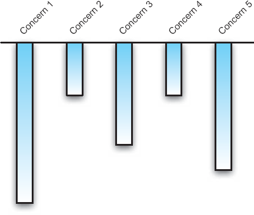
Figura 6-1. Modelando diferentes preocupações com diferentes profundidades (de Maier e Rechtin).
A Figura 6-1, emprestada do livro de Mark Maier e Eberhardt Rechtin, The Art of Systems Architecting (Maier e Rechtin 2000), retrata graficamente esse conceito. Ele mostra cinco preocupações sobre o sistema identificadas pelas partes interessadas. Neste caso específico, a Preocupação 1 é de grande importância e será considerada e modelada profundamente em grande detalhe. As preocupações 2 e 4 são menos importantes e serão modeladas de forma superficial. Como as preocupações e seus níveis relativos de importância variam de projeto para projeto, cada projeto terá necessidades de modelagem um pouco diferentes.
Modelagem é uma atividade e, como tal, frequentemente é governada por um processo. Sem dúvida, fará parte do processo maior de desenvolvimento de software centrado em arquitetura que temos discutido neste livro. No entanto, a modelagem em si é um subprocesso, e o processo de modelagem pode variar amplamente de projeto para projeto.
As atividades básicas por trás da modelagem orientada por partes interessadas são:
Embora os passos descritos acima estejam em ordem cronológica aproximada, eles podem ser incorporados a um processo iterativo. Quase nunca fica claro desde o início de um projeto quais são todos os aspectos importantes de um sistema de software, quais são os objetivos da modelagem e se esses objetivos são alcançáveis usando as notações, tecnologia, tempo e dinheiro disponíveis. Assim, essas estimativas devem ser reavaliadas e refinadas várias vezes ao longo do desenvolvimento do sistema, e os modelos e esforços de modelagem devem ser ajustados de acordo.
Conceitos Arquitetônicos Básicos
Embora cada arquitetura seja diferente, já identificamos anteriormente (particularmente emCapítulo 4) certos tipos de elementos que são importantes ao falar de projetos arquitetônicos. Entre eles estão os seguintes.
Componentes. Os componentes são os blocos arquitetônicos que encapsulam um subconjunto da funcionalidade e/ou dados do sistema, e restringem o acesso a eles por meio de uma interface explicitamente definida.
Conectores. Conectores são blocos arquitetônicos que afetam e regulam as interações entre componentes.
Interfaces. Interfaces são os pontos em que componentes e conectores interagem com o mundo exterior em geral, outros componentes e conectores.
Configurações. Configurações são um conjunto de associações específicas entre os componentes e conectores da arquitetura de um sistema de software. Tais associações podem ser capturadas por meio de grafos cujos nós representam componentes e conectores, e cujas arestas representam sua interconectividade.
Lógica. A racionalização é a informação que explica por que determinadas decisões arquitetônicas foram tomadas e qual o propósito que vários elementos desempenham.
Esses conceitos formam um ponto de partida para a modelagem arquitetônica. No nível mais básico, modelar esses conceitos requer uma notação que possa expressar um grafo de componentes e conectores, preferencialmente com pontos de conexão bem definidos (interfaces). Essas linguagens podem ser relativamente simples diagramas básicos de caixa e seta ou listas com referências internas apropriadas serão suficientes. A justificativa é um pouco diferente porque é mais amorfa. A justificativa é usada principalmente para comunicar informações e intenções entre as partes interessadas, e geralmente não é representada explicitamente no sistema de software construído realmente. Assim, as linguagens para expressar a racionalidade precisam ser mais expressivas e menos restritivas a racionalização é mais frequentemente expressa usando linguagem natural por essa razão.
Modelar apenas no nível mais básico (ou seja, enumerar a existência e as interconexões dos vários componentes e conectores) fornece um pequeno valor, mas esses modelos não serão suficientes para a maioria dos projetos complexos. Em vez disso, esses modelos precisam ser estendidos e anotados com uma série de outros conceitos: Como as funções são divididas entre os componentes? Quais são a natureza e os tipos das interfaces? O que significa um componente e um conector estarem conectados? Como todas essas propriedades de um sistema mudam ao longo do tempo? Essas questões estão no cerne da modelagem arquitetônica.
Dependendo da natureza do sistema em desenvolvimento e do domínio, pode ou não ser simples representar esses elementos básicos. Por exemplo, em um aplicativo de desktop, como um processador de texto ou planilha, os componentes e conectores de software serão relativamente estáticos e poucos em número. Mesmo com uma aplicação desktop muito complexa contendo, digamos, de 500 a 1000 componentes e conectores, é viável enumerar e descrever cada um desses elementos, bem como as interconexões entre eles.
Aplicações grandes, dinâmicas e distribuídas podem ser mais difíceis de modelar. Por exemplo, é basicamente impossível enumerar todos os componentes de software que fazem parte da World Wide Web ou sua configuração: são muitos deles e eles estão constantemente indo e vindo. Para essas aplicações, provavelmente é mais razoável modelar apenas partes do sistema ou configurações específicas que representem casos de uso esperados. Alternativamente, pode ser mais eficaz modelar o estilo arquitetônico que governa quais tipos de elementos podem ser incluídos na arquitetura e como eles podem ser configurados.
Elementos do estilo arquitetônico
Lembre-se de que um estilo arquitetônico é um conjunto de decisões de design arquitetônico aplicáveis em um determinado contexto de desenvolvimento, que restringem decisões de design arquitetônico específicas para um sistema específico dentro desse contexto e que provocam qualidades benéficas em cada sistema resultante. Além de modelar elementos arquitetônicos básicos, é frequentemente útil modelar o estilo que governa como esses elementos foram (e podem ser) usados.
Note que estilos arquitetônicos, assim como arquiteturas, são feitos de decisões de design. Essas decisões de design também podem ser modeladas. Modelar explicitamente o estilo arquitetônico pode ser útil por vários motivos. Isso reduz a confusão sobre o que é ou não permitido na arquitetura. Pode ajudar a reduzir o desvio arquitetônico e a erosão. Isso facilita distinguir se uma decisão específica de design em uma arquitetura foi tomada para se adequar a uma restrição estilística ou por algum outro motivo. Pode ajudar a orientar a evolução da arquitetura. Pode ser mais viável e útil do que a modelagem estrutural (grafos de componentes e conectores) para sistemas grandes ou dinâmicos. Como os estilos geralmente são aplicáveis a muitos projetos, modelos de estilo podem ser reutilizados de projeto em projeto. Estilos representam um único espaço para capturar preocupações e justificativas transversais para uma arquitetura.
Os tipos de decisões de design encontradas em um estilo arquitetônico são geralmente mais abstratas ou gerais do que as encontradas em uma arquitetura. Alguns tipos de decisões de design que podem ser capturadas em um modelo de estilo incluem:
Elementos específicos. Um estilo pode prescrever que componentes, conectores ou interfaces específicos sejam incluídos em arquiteturas ou usados em situações específicas. Isso pode ser facilitado por uma abordagem de modelagem que suporta modelos ou modelos base que são então elaborados.
Tipos de Componente, Conector e Interface. Tipos específicos de elementos podem ser permitidos, exigidos ou proibidos na arquitetura. Muitas abordagens de modelagem são acompanhadas por um sistema de tipos, embora frequentemente tenham semânticas diferentes.
Restrições de Interação. Podem existir restrições nas interações entre componentes e conectores. Essas restrições podem assumir muitas formas. Elas podem ser temporais ("os componentes chamadores devem chamar init() antes de qualquer outro método"). Elas podem ser topológicas ("apenas componentes na camada cliente podem invocar componentes na camada servidor"). Eles podem especificar protocolos de interação específicos, seja pelo nome (FTP, HTTP) ou especificação (especificações formais de protocolo em uma linguagem como CSP ou gráficos de sequência). Abordagens de modelagem que suportam restrições geralmente utilizam algum tipo de lógica lógica de primeira ordem, lógica temporal, e assim por diante.
Restrições comportamentais. Restrições sobre o comportamento dos elementos arquitetônicos, ou tipos de elementos, podem ser incluídas. As restrições podem abranger desde regras simples até especificações comportamentais completas para componentes expressos em uma notação, como autômatos de estados finitos. Aqui novamente, abordagens de modelagem que suportam restrições comportamentais usam lógica ou outros modelos formais (como diagramas de autômatos).
Restrições de Concorrência. Restrições sobre quais elementos executam suas funções simultaneamente e como sincronizam o acesso a recursos compartilhados também podem ser incluídas em um estilo arquitetônico. Abordagens que suportam a modelagem de concorrência frequentemente empregam modelos formais comportamentais de vários elementos arquitetônicos; muitos também incluem técnicas de modelagem temporal, como mapas de sequência e cartas de estado.
Aspectos Estáticos e Dinâmicos
Decisões de projeto arquitetônico podem abordar tanto aspectos estáticos quanto dinâmicos de um sistema. Aspectos estáticos de um sistema são aqueles que não envolvem o comportamento do sistema enquanto ele está em execução. Aspectos dinâmicos de um sistema envolvem o comportamento em tempo de execução do sistema.
Aspectos estáticos geralmente são mais fáceis de modelar simplesmente porque não envolvem mudanças ao longo do tempo. Modelos típicos de aspectos estáticos do sistema podem incluir topologias de componentes/conectores, atribuições de componentes e conectores a elementos de processamento ou hosts, configurações de host e rede, ou mapeamentos de elementos arquitetônicos para código ou artefatos binários.
Aspectos dinâmicos de um sistema podem ser mais difíceis de modelar porque precisam lidar com o comportamento ou as mudanças do sistema ao longo do tempo. Modelos típicos de aspectos dinâmicos podem ser modelos comportamentais (descrevendo o comportamento de um componente ou conector ao longo do tempo), modelos de interação (descrevendo as interações entre um conjunto de componentes e conectores ao longo do tempo) ou modelos de fluxo de dados (descrevendo como os dados fluem por uma arquitetura ao longo do tempo).
A distinção entre estática e dinâmica muitas vezes não é uma linha clara. Por exemplo, a estrutura de um sistema pode ser relativamente estável, mas pode mudar ocasionalmente devido a falhas de componentes, uso de conectores flexíveis ou dinamismo arquitetônico (vejaCapítulo 14). Nesses casos, modelos que capturam tanto aspectos estáticos quanto dinâmicos do sistema podem ser empregados: por exemplo, uma topologia base (estática) pode ser acompanhada por um conjunto de transições que descrevem um conjunto limitado de mudanças que podem ocorrer nessa topologia durante a execução.
Há uma distinção importante entre modelar aspectos estáticos e dinâmicos de um sistema e usar modelos estáticos ou dinâmicos. Os primeiros se referem às propriedades do sistema que está sendo modelado. Estes últimos referem-se a alterações nos próprios modelos. Um modelo de um aspecto dinâmico de um sistema descreve como o sistema (frequentemente, seu estado interno) muda à medida que executa. Um modelo dinâmico realmente muda a si mesmo.
Modelos dinâmicos não são necessários para capturar aspectos dinâmicos de um sistema. Considere um mapa estadual. Um estadual pode capturar o comportamento de um componente ao longo do tempo (um aspecto dinâmico), mas o próprio estadual geralmente não muda (por exemplo, adquire novos nós ou transições) à medida que o componente é executado. Se o mapa de estados estivesse conectado a um sistema em funcionamento de modo que o estado atual do sistema sempre fosse destacado no mapa de estados, então o mapa de estados se tornaria um modelo dinâmico. Tal estadograma seria útil para visualizar o comportamento de uma aplicação, talvez para fins de depuração.
Suportar modelos dinâmicos é mais difícil do que suportar modelos estáticos. Uma vez desenvolvidos, modelos estáticos podem ser incorporados a um sistema em modo "somente leitura" são recursos estáticos que podem ser usados como base para implementação, comparação e análise. Modelos dinâmicos devem ser incorporados em modo de "leitura-escrita" a execução do sistema pode alterar o próprio modelo. Isso requer suporte de ferramentas para manter o modelo e o sistema sincronizados e consistentes. Para que esses mecanismos operem automaticamente, o modelo deve ser armazenado em uma forma legível e gravável por máquinas, e o modelo deve ser devidamente mapeado para o sistema implementado. As visualizações do modelo também devem ser adequadamente dinâmicas, refletindo mudanças no modelo em tempo real, se possível.
Aspectos Funcionais e Não Funcionais
A arquitetura pode capturar tanto aspectos funcionais quanto não funcionais de um sistema. Aspectos funcionais estão relacionados aqueum sistema faz. Aspectos não funcionais estão relacionados acomoum sistema executa suas funções. Uma boa regra prática para pensar nessa distinção é que aspectos funcionais de um sistema podem ser descritos usando frases declarativas, sujeito-verbo:O sistema imprime prontuários médicos. Aspectos não funcionais de um sistema podem ser descritos adicionando advérbios a estas sentenças:O sistema imprime prontuários médicosRápida e confidencialmente. Um extenso levantamento de propriedades não funcionais sob uma perspectiva arquitetônica está contido emCapítulo 12.
Como os aspectos funcionais são geralmente mais concretos, eles são mais fáceis de modelar e podem frequentemente ser modelados de forma rigorosa e formal. Modelos funcionais típicos de um sistema podem capturar os serviços fornecidos por diferentes componentes e conectores, bem como as interconexões que alcançam as funções gerais do sistema. Eles podem capturar o comportamento de componentes, conectores ou subsistemas, descrevendo quais funções esses elementos desempenham. Os aspectos funcionais de um sistema podem ser estáticos ou dinâmicos.
A maioria das notações de modelagem foca em capturar aspectos funcionais dos sistemas. As notações e abordagens diferem nos aspectos de um sistema que podem ser descritos e como. Qualquer notação ou abordagem de modelagem selecionada deve empregar um número suficiente de conceitos para expressar o aspecto; A semântica subjacente à abordagem determinará os tipos de raciocínio e análise que podem ser aplicados.
Aspectos não funcionais dos sistemas tendem a ser qualitativos e subjetivos. Modelos de aspectos não funcionais de sistemas podem ser mais informais e menos rigorosos do que modelos funcionais, mas isso não significa que não devam ser capturados. Frequentemente, aspectos funcionais dos sistemas são desenvolvidos especificamente para corresponder ou alcançar objetivos não funcionais. Por exemplo, um modelo não funcional pode simplesmente prescrever que o componente de processamento de salário seja rápido. O modelo funcional do componente de pagamento pode descrever como o componente de processamento de salário utiliza caches e processamento local duas estratégias funcionais que ajudam a alcançar o aspecto não funcional modelado.
Assim como a justificativa de projeto, aspectos não funcionais dos sistemas são difíceis de modelar com rigor. Notações expressivas e livres, como a linguagem natural, são frequentemente usadas para capturar aspectos não funcionais. É útil, no entanto, empregar abordagens com suporte à rastreabilidade, que permitem aos modeladores mapear explicitamente propriedades não funcionais para decisões de projeto funcional.
AMBIGUIDADE, PRECISÃO E PRECISÃO
Arquiteturas são abstrações de sistemas. Eles capturam informações sobre alguns aspectos do sistema e deixam de fora outros. Idealmente, os aspectos principais e mais importantes de um sistema serão bem definidos pela arquitetura. As partes especificadas podem descrever o estado nominal do sistema e deixar de fora estados incomuns. Isso é, até certo ponto, normal: arquiteturas não são feitas para serem implementações completas de um sistema. Consequentemente, as notações usadas para capturar arquiteturas não precisam ser completamente inequívocas, precisas e precisas.
Três conceitos-chave podem ser usados para caracterizar modelos arquitetônicos: ambiguidade, precisão e exatidão.
Ambiguidade
Definição. Um modelo é ambíguo se estiver aberto a mais
de uma interpretação.
Como interpretações conflitantes de um modelo podem levar a mal-entendidos, bugs e erros, geralmente é desejável eliminar ambiguidades no design. A incompletude é uma das principais razões para ambiguidade em modelos: quando algum aspecto de um sistema não é especificado, diferentes partes interessadas podem fazer suposições diferentes sobre como a lacuna deve ser preenchida. Arquiteturas são necessariamente incompletas: elas abordam decisões principais de design sobre um sistema, não todas as decisões de design.
Por essa razão, geralmente é impossível eliminar completamente a ambiguidade nos modelos arquitetônicos. Além disso, os custos de tentar fazer isso quase sempre superam os benefícios. Portanto, é preciso encontrar um equilíbrio. Uma boa diretriz é permitir que aspectos do sistema sejam ambíguos com o consentimento das partes interessadas apropriadas, procedendo quando concordam que a arquitetura está "completa o suficiente" e que as decisões restantes podem ser tomadas em uma futura atividade de desenvolvimento. Enquanto essa avaliação avança, é útil identificar e documentar especificamente aspectos ambíguos da arquitetura como uma espécie de justificativa de design.
Precisão e Precisão
Muitas concepções de precisão e exatidão, incluindo definições de dicionário, confundem os dois termos. Aqui, adotaremos uma interpretação que os delinee de forma mais clara.
Definição. Um modelo é preciso se for correto, estiver
conforme aos fatos ou se desviar da correção dentro de limites aceitáveis.
Definição. Um modelo é preciso se for específico,
detalhado e exato.
Precisão lida com correção, enquanto precisão lida com exatidão. Em termos arquitetônicos, um modelo é preciso se transmitir informações corretas sobre o sistema modelado. Um modelo é preciso se transmitir muitas informações detalhadas sobre o sistema modelado. Pode parecer que esses conceitos andam juntos, mas na verdade são um tanto ortogonais.
A Figura 6-2 mostra graficamente a distinção entre precisão e precisão como um conjunto de alvos que foram atingidos. Considere cada plano como uma afirmação sobre um sistema sendo projetado. A Figura 6-2(a) mostra um conjunto de tiros (asserções) que não são nem precisos nem precisos: eles não estão próximos uns dos outros nem próximos ao alvo. Arquitetonicamente, isso representa decisões de projeto que são tanto incorretas (ou seja, imprecisas) quanto vagas ou gerais (ou seja, imprecisas). A Figura 6-2(b) mostra os disparos que são precisos, mas não precisos: eles estão agrupados ao redor do alvo, mas não estão próximos uns dos outros. Essas afirmações são precisas (corretas), mas vagas e sem detalhes. Arquitetonicamente, isso pode ser resultado de ambiguidade ou descrições corretas de apenas alguns aspectos do sistema. A Figura 6-2(c) mostra tiros precisos, mas não precisos: eles estão agrupados próximos uns dos outros, mas não próximos ao alvo. Isso pode ser interpretado como afirmações sobre o sistema altamente detalhadas, mas erradas. A Figura 6-2(d) mostra cenas que são ao mesmo tempo precisas e exativas: as afirmações são detalhadas e corretas.
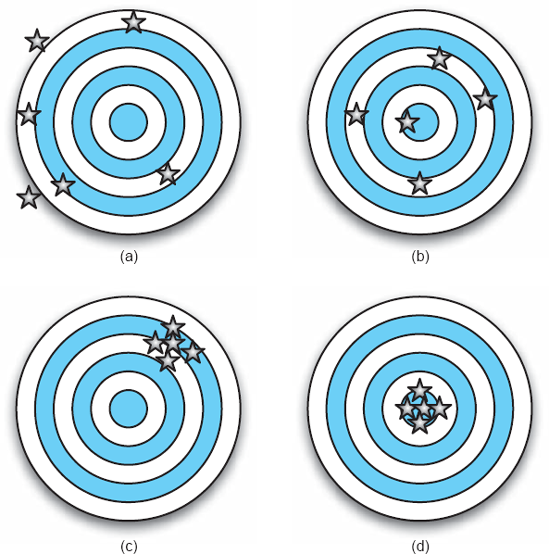
Figura 6-2. Uma representação gráfica que distingue precisão e exatidão.
No desenvolvimento de uma arquitetura, a precisão geralmente deve ser favorecida em detrimento da precisão. Precisão e completude são, claro, desejáveis, mas fases posteriores de design detalhado e implementação necessariamente completarão os detalhes que faltam. No entanto, modelos arquitetônicos imprecisos que enganam as partes interessadas nessas fases posteriores geralmente levam a erros caros nas atividades de desenvolvimento posteriores.
Notações e abordagens de modelagem podem ter um efeito significativo na ambiguidade, precisão e exatidão dos modelos. Algumas anotações incluem elementos propositalmente ambíguos elas permitem que as partes interessadas interpretem seu significado da maneira mais útil para o projeto. Outras notações são baseadas em semântica formal e incentivam especificações menos ambíguas e mais precisas. Nessas abordagens, os projetistas especificam o que cada elemento significa e como ele deve ser interpretado. Frequentemente, essas interpretações são incorporadas diretamente em ferramentas de visualização e análise.
Os stakeholders podem encontrar utilidade em todos os tipos de abordagens de modelagem, desde as ambíguas e imprecisas até aquelas com semântica formal. Abordagens que promovem redução da ambiguidade e aumento da precisão e precisão são frequentemente mais custosas de usar porque possuem curvas de aprendizado maiores e exigem modelagem mais detalhada. Por essas razões, as partes interessadas geralmente devem escolher notações que permitam uma modelagem inequívoca, precisa e precisa dos aspectos do sistema que são mais importantes. Outras abordagens podem ser usadas para aspectos menos importantes do sistema. Como nenhuma notação será ideal para modelar todos os aspectos de um sistema, combinações de notações geralmente devem ser usadas para capturar uma arquitetura.
A Ilusão da Qualidade
Em última análise, usamos a arquitetura para garantir que o sistema que estamos desenvolvendo atinja qualidades específicas desejadas: confiabilidade, robustez, mantibilidade, evolutividade e muitas outras.
Frequentemente, os stakeholders assumem que o uso de uma notação ou abordagem de modelagem específica garantirá (substancialmente) que o sistema modelado alcançará algum conjunto dessas qualidades. Esse sentimento é incorporado em afirmações familiares como: "Sabemos que temos uma boa arquitetura porque a projetamos usando UML" ou "Claro que nossa arquitetura é confiável ela está em conformidade com o DoDAF."
A realidade é que, em muitas notações, é tão fácil modelar decisões de design ruins quanto boas. Por essa razão, é importante entender as limitações das notações e abordagens selecionadas para um projeto. Nem todos são iguais; Em algumas notações, por exemplo, pode ser possível verificar formalmente (com a ajuda de ferramentas) que um sistema está livre de imtravamentos, ou que um sistema em tempo real nunca perderá seus prazos. No entanto, comparadas a abordagens mais permissivas como as UML, essas notações raramente são usadas na prática.
É fácil se deixar enganar. Considere um modelo de sistema escrito em uma notação com baixa ambiguidade e alta precisão. Como discutido na Seção 6.2.2, é possível criar especificações de sistema muito precisas que, no entanto, estejam erradas ou simplesmente descrevam um projeto ruim. Um bom software geralmente é modelado com precisão, mas modelos precisos não implicam necessariamente que o software seja bom.
MODELAGEM COMPLEXA: CONTEÚDO MISTO E MÚLTIPLAS VISÕES
Modelos de arquitetura são artefatos complexos. Eles tentam capturar todas as decisões de design sobre um sistema que são importantes para uma grande variedade de partes interessadas. Além disso, diferentes aspectos do mesmo conceito serão capturados simultaneamente, por exemplo, as interconexões de um componente com outros componentes, seu comportamento e seu histórico de versões. Há simplesmente informação demais para lidar de uma só vez, e tentar fazer isso não é produtivo: os stakeholders geralmente querem interagir com as partes da arquitetura que são mais importantes do ponto de vista deles.
Em geral, nenhuma abordagem única será capaz de capturar todos os aspectos de uma arquitetura para um projeto. Isso significa que várias partes da arquitetura podem precisar ser modeladas usando abordagens diferentes. Por exemplo, aspectos não funcionais de um sistema podem ser capturados usando linguagem natural, estrutura com um grafo componente-conector e vários comportamentos de componentes com cartas de estado.
Pontos de vista e pontos de vista
Essa situação induz a noção de pontos de vista e pontos de vista.
Definição. Uma visão é um conjunto de decisões de design
relacionadas por uma preocupação comum (ou conjunto de preocupações).
Definição. Um ponto de vista define a perspectiva a
partir da qual uma visão é tomada.
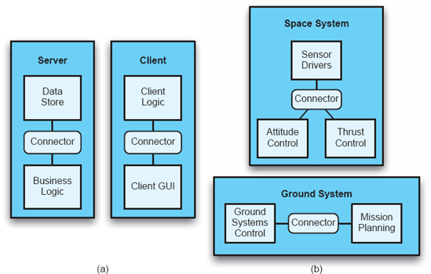
Figura 6-3. As visualizações de implantação das arquiteturas de dois sistemas diferentes.
Uma visão é uma instância de um ponto de vista para um sistema específico. Em outras palavras, um ponto de vista é um filtro para informações, e uma visão é o que você vê quando observa um sistema através desse filtro. Por exemplo, considere o domínio dos sistemas nos quais os componentes de software são distribuídos por múltiplos hosts. O ponto de vista de implantação é uma perspectiva sobre tais sistemas que captura decisões de design relacionadas a como os componentes são atribuídos aos hosts. A visualização de implantação de um sistema específico captura como os componentes são atribuídos aos hosts desse sistema específico.
A Figura 6-3 mostra as vistas de implantação de dois sistemas diferentes. A Figura 6-3(a) mostra a visualização de implantação de um sistema cliente-servidor. A Figura 6-3(b) mostra a visão de implantação de um sistema espaço-terra distribuído como o Lunar Lander. No entanto, ambas as visões são adotadas do ponto de vista da implantação; ou seja, ambos capturam decisões de projeto relacionadas à implantação de componentes em hosts.
Em geral, pontos de vista estão associados a uma preocupação. Exemplos de pontos de vista comumente capturados incluem:
Também é possível que múltiplas visões sejam feitas a partir do mesmo ponto de vista para o mesmo sistema. Ou seja, pode haver múltiplas vistas de implantação para um único sistema, com diferentes níveis de detalhe. Uma visão pode mostrar apenas componentes de nível superior, enquanto outra pode mostrar tanto componentes de nível superior quanto subcomponentes e estrutura interna adicional.
O uso de pontos de vista e pontos de vista na modelagem é importante por vários motivos:
Consistência entre Opiniões
Frequentemente, a mesma informação ou informações relacionadas estarão presentes em duas ou mais visualizações. Isso imediatamente levanta uma questão importante: Como saber se duas visões são consistentes entre si? Isso exige uma definição de consistência em relação às vistas arquitetônicas.
As visualizações são consistentes se as decisões de design que elas contêm forem compatíveis. Alternativamente, consistência pode ser vista como a ausência de inconsistência. Uma inconsistência ocorre quando duas visões afirmam decisões de design que não podem ser verdadeiras simultaneamente. Muitos tipos de inconsistência podem surgir. Alguns tipos de inconsistência que podem ocorrer em uma descrição de arquitetura de múltiplas visualizações incluem o seguinte.
Inconsistências diretas. Essas inconsistências ocorrem quando duas visões afirmam proposições diretamente contraditórias, como "o sistema funciona em dois hosts" e "o sistema roda em três hosts." Essas inconsistências podem frequentemente ser detectadas por mecanismos automáticos que empregam restrições e regras apropriadas.
Inconsistências de refinamento. Essas inconsistências ocorrem quando duas visões do mesmo sistema, em diferentes níveis de detalhe, afirmam proposições contraditórias. Por exemplo, uma vista estrutural de "nível superior" contém um componente que está ausente de uma visão estrutural que inclui subarquiteturas. Essas inconsistências também podem ser detectadas automaticamente com regras de consistência apropriadas, desde que tanto a visão de nível superior quanto a refinada contenham informações suficientes para entender a relação entre as duas.
Aspectos Estáticos versus Aspectos Dinâmicos. Nessa inconsistência, uma visão de um aspecto estático de um sistema entra em conflito com uma visão de um aspecto dinâmico. Por exemplo, uma visualização de diagrama de sequência de mensagens pode representar o tratamento de mensagens por um componente que não está contido na visualização estrutural. Essas inconsistências podem ser um pouco mais difíceis de detectar automaticamente, dependendo de quão explícita é a especificação do aspecto dinâmico.
Aspectos Dinâmicos. Nessa inconsistência, duas visões sobre aspectos dinâmicos do sistema entram em conflito. Por exemplo, um gráfico de sequência de mensagens representa uma interação específica entre componentes que não é permitida pelas especificações comportamentais contidas nos estados desses componentes. Essas inconsistências são frequentemente extremamente difíceis de detectar automaticamente porque exigiriam uma extensa exploração de estados ou simulações.
Aspectos Funcionais versus Não Funcionais. Essas inconsistências ocorrem quando uma propriedade não funcional de um sistema prescrita por uma visão não funcional não é atendida pelo desenho expresso nas visões funcionais. Por exemplo, uma visão não funcional de um sistema cliente-servidor pode expressar que o sistema deve ser robusto, mas a visão física do sistema pode mostrar apenas um único servidor sem evidências de máquinas de gerenciamento de falhas. Essas inconsistências são as mais difíceis de detectar devido à natureza geral e abstrata das propriedades não funcionais.
A Figura 6-4 mostra duas visões hipotéticas de um sistema distribuído de Lunar Lander. A vista física (a) mostra três hospedeiros: um Sistema Terrestre, um Computador de Módulo de Comando e um Computador de Pouso (Módulo de Pois). No entanto, a visualização de implantação (b) mostra componentes atribuídos a apenas dois hospedeiros, um Sistema Terrestre e um módulo lunar. É relativamente fácil perceber que algo não está certo aqui há uma inconsistência entre a visão física e a de implantação. A inconsistência se encaixa na definição acima a visão física afirma a decisão de projeto de que o Lunar Lander opera em dois hospedeiros, enquanto a visão de implantação afirma a decisão de que o Lunar Lander opera em três.
Essa inconsistência é relativamente fácil de perceber apenas olhando. No entanto, outras inconsistências mais sutis (como inconsistências entre diferentes especificações comportamentais de uma arquitetura) são mais difíceis de detectar e mais custosas de corrigir.
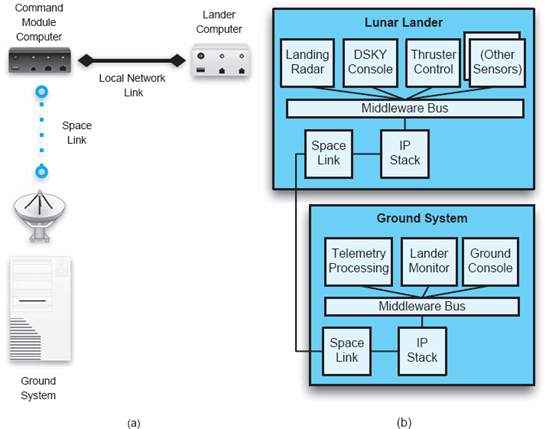
Figura 6-4. Visão física (a) e visão lógica (b) do sistema de Lunar Lander de A.
Deteter, identificar e resolver inconsistências entre as visões é um problema difícil. Primeiro, as partes interessadas devem concordar sobre o que "consistência" significa para sua escolha particular de pontos de vista e notações de modelagem. Depois, estratégias devem ser empregadas para identificar e lidar com inconsistências. Essas abordagens podem variar desde abordagens manuais, como inspeções e listas de verificação, até abordagens automatizadas, como checagem de modelos e simulação.Capítulo 8, que cobre análise arquitetônica, discute em detalhes abordagens específicas para lidar com inconsistências.
A inconsistência é geralmente, mas nem sempre, indesejável. Inconsistências surgirão como parte natural do design exploratório ao projetar uma arquitetura, partes dela podem ser temporariamente inconsistentes à medida que o projeto evolui. Às vezes, inconsistências são deixadas em uma arquitetura deliberadamente após acordo das partes interessadas para lidar com um caso especial, ou porque reparar essa inconsistência seria muito caro.
AVALIAÇÃO DE TÉCNICAS DE MODELAGEM
Nas seções anteriores, exploramos várias dimensões que podem ser usadas para caracterizar diferentes técnicas de modelagem. Essas dimensões podem ser transformadas em uma rubrica para refletir criticamente e avaliar diferentes técnicas de modelagem. Essa rubrica será aplicada a várias técnicas no restante deste capítulo.
Rubrica de Técnicas de Modelagem
|
Escopo e Propósito |
Qual é o escopo da técnica? O que ela pretende modelar e o que não é destinada a modelar? |
|
Elementos Básicos |
Quais são os elementos ou conceitos básicos (por exemplo, os "átomos") na técnica? Como esses modelos são feitos? |
|
Estilo |
Até que ponto a técnica apoia a modelagem de restrições estilísticas e para que tipos de estilos? |
|
Aspectos Estáticos e Dinâmicos |
Até que ponto a técnica suporta a modelagem de aspectos estáticos da arquitetura? Até que ponto ela apoia a modelagem de aspectos dinâmicos da arquitetura? |
|
Modelagem Dinâmica |
Até que ponto o modelo pode ser alterado para refletir as mudanças conforme o sistema é executado? |
|
Aspectos Não Funcionais |
Até que ponto a técnica suporta a modelagem de aspectos não funcionais da arquitetura? (Aqui, deixamos de fora os aspectos funcionais porque assumimos que esses serão adequadamente cobertos por outras partes do rubrico). |
|
Ambiguidade |
Quais medidas a abordagem toma para limitar (ou permitir) a ambiguidade? |
|
Exatidão |
Até que ponto essa abordagem oferece suporte para determinar a correção dos modelos? |
|
Precisão |
Em que nível de detalhe os vários aspectos da arquitetura podem ser modelados? |
|
Vista |
Quais pontos de vista o modelo apoia? |
|
Consistência de Visualização |
Em que medida a abordagem oferece suporte para determinar a consistência de diferentes pontos de vista expressos em um modelo? |
TÉCNICAS ESPECÍFICAS DE MODELAGEM
Os arquitetos dispõem de uma variedade de anotações e técnicas para modelar diferentes aspectos da arquitetura. Essas técnicas variam em várias dimensões: o que podem modelar, quão precisamente capturam a semântica arquitetônica, quão bom é o suporte à ferramenta, e assim por diante. Quais métodos são usados e para quais fins dependerá em grande parte dos arquitetos e partes interessadas do sistema. Embora muitas abordagens para modelagem de arquiteturas sejam amplamente abrangentes e aplicáveis a muitos sistemas em muitos domínios, é importante não se apegar dogmaticamente a nenhuma abordagem específica.
As próximas seções discutem e avaliam várias abordagens que podem ser usadas para modelar arquiteturas de software. Uma versão simples do sistema Lunar Lander é usada como exemplo recorrente para ilustrar e comparar técnicas de modelagem.
Técnicas Genéricas
Essas técnicas são frequentemente usadas para descrever uma arquitetura de software total ou parcialmente, embora não tenham sido especificamente desenvolvidas ou adaptadas para esse propósito. Por isso, tendem a ser flexíveis, mas têm pouca semântica.
Língua natural
Línguas naturais, como o inglês, são uma forma óbvia de documentar decisões de design arquitetônico. As linguagens naturais são expressivas, mas tendem a ser ambíguas, não rigorosas e não formais. A linguagem natural não pode ser processada e compreendida de forma eficaz por máquinas, e portanto só pode ser verificada e inspecionada por humanos.
Apesar dessas desvanências, a modelagem em linguagem natural pode ser a melhor forma de capturar alguns aspectos de uma arquitetura. Por exemplo, requisitos não funcionais são frequentemente capturados usando linguagem natural, pois são abstratos e qualitativos. A linguagem natural é facilmente acessível para as partes interessadas e pode ser manipulada com ferramentas comuns, como processadores de texto.
Uma alternativa ao uso da linguagem natural pura é usar uma forma restrita dela. Os usuários podem criar e empregar consistentemente um dicionário de termos para limitar certos tipos de problemas (por exemplo, ambiguidade que pode surgir do uso de termos diferentes para o mesmo conceito, ou falta de clareza). Modelos de declarações, que são declarações em linguagem natural ou parágrafos com parâmetros para preencher as lacunas, podem ser outra forma de aumentar o rigor na linguagem natural. No entanto, o uso excessivo dessa estratégia tem um efeito negativo essencialmente, cria uma linguagem específica de domínio sem nenhum dos benefícios de flexibilidade da linguagem natural.[8].
Critério de Avaliação para Linguagem Natural
|
Escopo e Propósito |
Descrevendo conceitos arbitrários com um vocabulário extenso, mas de forma informal. |
|
Elementos Básicos |
Qualquer conceito necessário, sem suporte especial para nenhum conceito específico. |
|
Estilo |
Conceitos estilísticos podem ser descritos simplesmente usando uma linguagem mais geral. |
|
Aspectos Estáticos e Dinâmicos |
Tanto aspectos estáticos quanto dinâmicos dos sistemas podem ser modelados. |
|
Modelagem Dinâmica |
Modelos precisam ser alterados por humanos e podem ser reescritos com uma ferramenta como um processador de texto, mas não há uma maneira viável de ligar esses modelos à implementação. |
|
Aspectos Não Funcionais |
Vocabulário expressivo disponível para descrever aspectos não funcionais de sistemas (embora não haja suporte para verificá-los). |
|
Ambiguidade |
A linguagem natural simples é talvez a notação mais ambígua disponível para expressar arquiteturas; Técnicas como modelos de sentenças e dicionários bem definidos de termos podem ser usadas para reduzir a ambiguidade. |
|
Exatidão |
A correção deve ser avaliada por meio de revisões e inspeções manuais, e não pode ser automatizada. |
|
Precisão |
Texto adicional pode ser usado para descrever qualquer aspecto da arquitetura com mais detalhes. |
|
Vista |
Todos os pontos de vista (mas nenhum suporte específico para qualquer ponto de vista). |
|
Consistência de Visualização |
A correção deve ser avaliada por meio de revisões e inspeções manuais, e não pode ser verificada automaticamente. |
Lunar Lander em Linguagem Natural
Aqui, apresentamos uma versão simples de três componentes da aplicação Lunar Lander que será usada ao longo do restante deste capítulo para ilustrar o uso de diferentes abordagens de modelagem.
A aplicação do módulo de pouso lunar pode ser descrita em linguagem natural, como mostrado na Figura 6-5, que fornece uma quantidade considerável de informações sobre o sistema do módulo lunar. Por exemplo, a estrutura dos componentes e suas dependências é explicitamente declarada, assim como uma descrição de seus comportamentos, entradas, saídas e responsabilidades gerais. A descrição não chega a especificar certos detalhes necessários para implementar o sistema. Por exemplo, ele não explica o algoritmo que o componente de cálculo usa para seus cálculos, os formatos particulares dos diferentes valores de dados, nada sobre os conectores entre os componentes ou como a interface do usuário deveria ser.
Muitas implementações diferentes poderiam satisfazer essa descrição arquitetônica, e podem não funcionar todas de forma idêntica. Isso se deve parcialmente à natureza dos modelos arquitetônicos em geral eles documentam decisões principais de projeto, não todas as decisões de design. Isso também se deve parcialmente à ambiguidade inerente às especificações de linguagem natural. Essa especificação não é a forma mais concisa ou compreensível de expressar aspectos desse sistema, como sua estrutura leitores da especificação provavelmente construirão um gráfico mental dos componentes constituintes do sistema enquanto lem, já que um não é fornecido.
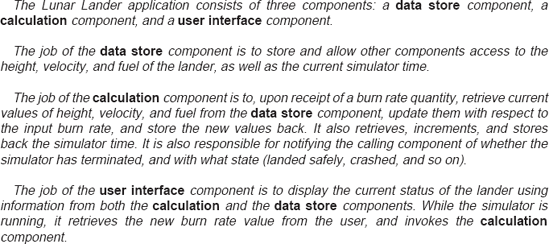
Figura 6-5. Modelo do módulo lunar em linguagem natural (inglês americano).
Conclusão. A linguagem natural deve ser usada como complemento a linguagens mais rigorosas e formais, para aspectos da arquitetura onde o formalismo é inviável ou desnecessário. É particularmente bom para especificar propriedades não funcionais de uma forma que quase nenhuma outra linguagem consegue igualar.
Modelagem Gráfica Informal no estilo PowerPoint
Ferramentas como Microsoft PowerPoint (Microsoft Corporation 2007) e OmniGraffle (The Omni Group 2007) oferecem aos usuários a capacidade de criar diagramas decorativos de formas interconectadas por meio de uma interface gráfica point-and-click. Eles são onipresentes e é fácil usá-los para criar diagramas esteticamente agradáveis. As limitações de tamanho desses diagramas (um slide, uma folha de papel) ajudam a garantir que permaneçam adequadamente abstratos.
As notações gráficas informais têm muito em comum com as linguagens naturais elas oferecem formas informais e sem restrições de expressar ideias (embora usem principalmente símbolos em vez de palavras). Diagramas gráficos informais frequentemente capturam pouca (se é que alguma) semântica. Isso dificulta a interpretação confiável do significado dos diagramas, minando as principais vantagens de usar uma arquitetura desde o início (comunicação, análise, e assim por diante). Esses diagramas são bons para prototipagem e exploração iniciais, capturando ideias em um nível abstrato e conceitual. No entanto, eles carecem do rigor necessário para modelos mais concretos.
Rubrica de Avaliação para Modelagem Gráfica Informal
|
Escopo e Propósito |
Diagramas arbitrários compostos por elementos gráficos e textuais, com poucas restrições. |
|
Elementos Básicos |
Formas geométricas, splines, sequências de texto, clip art. |
|
Estilo |
No geral, sem suporte. |
|
Aspectos Estáticos e Dinâmicos |
Como esses modelos não têm semântica arquitetônica, não existe a noção de modelagem de aspectos estáticos ou dinâmicos dos sistemas. |
|
Modelagem Dinâmica |
Os formatos dos modelos são geralmente proprietários e difíceis de mudar fora do ambiente nativo. No entanto, alguns ambientes expõem interfaces chamáveis externamente que permitem que modelos sejam manipulados programaticamente (por exemplo, o PowerPoint expõe seus modelos por meio de uma interface COM). |
|
Aspectos Não Funcionais |
Aspectos não funcionais podem ser modelados usando decorações em linguagem natural em diagramas. |
|
Ambiguidade |
Assim como na linguagem natural, a ambiguidade pode ser controlada por meio do uso de um vocabulário simbólico controlado ou dicionário. |
|
Exatidão |
Em geral, a correção é determinada por meio de inspeção manual e não pode ser verificada automaticamente. |
|
Precisão |
Os modeladores podem escolher um nível de detalhe apropriado; no entanto, geralmente são limitados pela quantidade de informação que pode caber em um diagrama ou slide. |
|
Vista |
Como esses modelos carecem de semântica arquitetônica, não há suporte direto para múltiplos pontos de vista. Em teoria, um modelo pode mostrar qualquer ponto de vista. |
|
Consistência de Visualização |
Em geral, a consistência é determinada por meio de inspeção manual e não pode ser verificada automaticamente. |
Módulo lunar em PowerPoint. Existem muitas maneiras de expressar a arquitetura do Lunar Lander em uma ferramenta como o Microsoft PowerPoint, limitada apenas pela paleta de símbolos disponível na ferramenta.
Um modelo arquitetônico do Lunar Lander em PowerPoint é mostrado na Figura 6-6. Como na maioria dos diagramas de arquitetura PowerPoint, a simbologia particular usada não é explicada diretamente não há um modelo semântico subjacente (além das expectativas do leitor) para interpretar esse diagrama. Os significados das caixas tridimensionais, das setas e dos retângulos arredondados não são fornecidos. Esforços de modelagem mais sérios poderiam fornecer um dicionário simbólico para acompanhar tal diagrama. No entanto, isso pode ser perigoso: mesmo quando os usuários empregam símbolos consistentes ou bem compreendidos, ferramentas informais de diagramação não conseguem fornecer verificações ou análises automáticas de consistência.
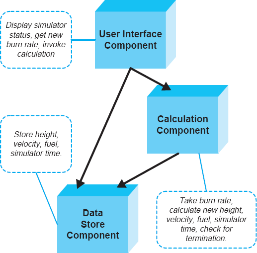
Figura 6-6. Modelo arquitetônico do módulo lunar em PowerPoint.
A interpretação pretendida deste diagrama específico é que as caixas tridimensionais são componentes de software, as setas indicam dependências de invocação e os retângulos arredondados são um comentário sobre o comportamento e as responsabilidades pretendidas dos componentes. Assumindo que o leitor interpreta corretamente os significados dos símbolos, esse modelo é, em certos aspectos, mais fácil de entender do que o modelo da linguagem natural. Por exemplo, a componentização do sistema e as dependências dos componentes são imediatamente óbvias, e os comportamentos estão visualmente conectados aos componentes.
Conclusão. PowerPoint e ferramentas similares são sedutoras porque facilitam muito a criação de diagramas gráficos. No entanto, deve ser tomado muito cuidado ao usar diagramas gráficos informais como parte de qualquer descrição oficial de arquitetura eles podem ser valiosos para descrições iniciais de arquitetura no verso do guardanapo, mas assim que decisões básicas forem tomadas, notações mais rigorosas devem ser empregadas para captura real de arquitetura.
A Linguagem Unificada de Modelagem (e Seus Parentes)
UML, a Linguagem Unificada de Modelagem (Booch, Rumbaugh e Jacobson 2005), é a notação mais popular para escrever projetos de software. Ele é unificado no fato de combinar conceitos de notações anteriores, como diagramas de Booch (Booch, 1986), OMT de James Rumbaugh (Rumbaugh et al. 1990), OOSE de Ivar Jacobson (Jacobson 1992) e Statecharts de David Harel (Harel 1987). As principais forças do UML são sua grande variedade de construtos e pontos de vista de modelagem, amplo suporte a ferramentas e ampla adoção.
UML é uma anotação enorme sobre quais livros inteiros podem ser e já foram escritos. Aqui resumimos seu papel como linguagem de modelagem arquitetônica. Mais informações sobre o UML como padrão para modelagem de software e sistemas são apresentadas emCapítulo 16.
UML é uma notação inerentemente gráfica, com vistas consistindo em símbolos gráficos anotados textualmente. Ele oferece aos seus usuários uma variedade extremamente ampla de construtos e conceitos de modelagem. O UML 2.0 inclui treze pontos de vista diferentes, chamados de "diagramas" na linguagem do UML. Esses pontos de vista abrangem muitas das dimensões identificadas anteriormente neste capítulo, incluindo elementos arquitetônicos básicos, restrições estilísticas e aspectos estáticos e dinâmicos dos sistemas.
Muito debate ocorreu ao longo dos anos sobre a adequação do UML para modelar sistemas de software no nível da arquitetura. As primeiras versões do UML (1.0 e 1.1) (Booch, Rumbaugh e Jacobson 1998) tinham forte foco no design detalhado abaixo do nível de construções arquitetônicas comuns, como componentes e conectores. Eles eram tendenciosos para o design de sistemas orientados a objetos que se comunicam principalmente por meio de chamadas de procedimentos. O UML 2.0 expandiu significativamente o UML para oferecer suporte muito melhor a construções arquitetônicas de nível superior. Pontos de vista existentes foram ampliados com novos elementos e pontos de vista totalmente novos foram adicionados.
A ampla gama de diagramas do UML o torna uma opção atraente para modelar todos os tipos de sistemas de software. No entanto, é vital que os arquitetos não fiquem presos ao UML como sua única solução de modelagem para arquiteturas, ou superestimem os benefícios conferidos pelo uso do UML.
Figuras 6-7. Um diagrama de componentes UML mostrando uma dependência entre dois componentes.
Os pontos de vista da UML permanecem majoritariamente focados no design. De muitas maneiras, esses pontos de vista ainda mantêm um viés inerente em direção a sistemas orientados a objetos. Alguns dos pontos de vista se estendem a outras atividades do ciclo de vida, capturando alguns aspectos relacionados a requisitos e implementação. O suporte explícito é mínimo para atividades como testes e manutenção e meta-atividades, como gestão. Decisões arquitetônicas podem afetar qualquer um desses aspectos do desenvolvimento; Por isso, notações adicionais devem ser usadas para capturar uma arquitetura completa.
Compreender a semântica dos diagramas UML é fundamental para torná-los úteis na descrição de decisões de design arquitetônico. UML é mais preciso do que diagramas arbitrários que seriam produzidos, por exemplo, em PowerPoint. No entanto, foi projetado para ser propositalmente ambíguo em muitos aspectos, a fim de aumentar sua generalidade.
Por exemplo, a seta de ponta aberta tracejada é uma seta de "dependência". Indica que o elemento na cauda da flecha tem alguma dependência do elemento na ponta da seta. As figuras 6-7 mostram um diagrama simples de componentes UML com dois componentes. A seta tracejada indica que o componente Cálculo depende do componente Data Store. No entanto, isso pode significar várias coisas, incluindo:
E assim por diante, e assim por diante. A maioria dos construtos em UML é igualmente ambígua semanticamente. (Nem mesmo está claro quais são os componentes em As figuras 6-7 referem-se: Podem ser classes em uma linguagem de programação orientada a objetos, módulos C, serviços web ou algo diferente.)
Essa abordagem oferece grande flexibilidade ao UML, mas limita sua precisão semântica. Felizmente, o UML inclui recursos que permitem aos seus usuários definir novos atributos (chamados estereótipos e valores marcados) e restrições que podem ser aplicadas a elementos existentes para especializá-los. Restrições em UML podem ser especificadas em qualquer linguagem (incluindo linguagem natural), mas uma linguagem complementar chamada Linguagem de Restrições de Objetos (OCL) oferece uma maneira conveniente de escrever restrições rigorosas para UML. Um conjunto desses atributos e restrições adicionais é conhecido como perfil UML. Perfis geralmente são projetados para aplicações, linhas de produtos ou domínios específicos, e servem para aumentar a precisão semântica dos diagramas UML dentro desse escopo.
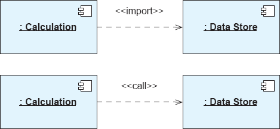
Figuras 6-8. Diagramas de componentes UML com semântica mais específica fornecida usando estereótipos.
As Figuras 6-8 mostram duas variantes do diagrama dos componentes na Figura 6-7. Cada um deles usa um estereótipo UML para fornecer detalhes adicionais sobre o significado da seta de dependência. No entanto, isso não torna a seta de dependência completamente inequívoca entendê-la ainda depende da interpretação do leitor de "importar" ou "chamar". O diagrama superior indica que Cálculo importa o Data Store. O diagrama inferior indica que o Cálculo chama Data Store. A seleção disponível de estereótipos e seus significados específicos é definida pelo perfil UML em uso.
Diagramas UML sozinhos não carregam informações suficientes para interpretá-los completamente. As partes interessadas podem fazer acordos entre si sobre como interpretar aspectos específicos dos diagramas UML em um projeto e documentar esses acordos em documentos externos em linguagem natural. Os stakeholders também devem considerar seriamente definir ou selecionar um perfil com interpretações documentadas para os estereótipos, valores marcados e restrições incluídos.
Rubrica de Avaliação para UML
|
Escopo e Propósito |
Capturar decisões de design para um sistema de software usando até treze tipos diferentes de diagramas. |
|
Elementos Básicos |
Uma multiplicidade classes, associações, estados, atividades, nós compostos, restrições (em OCL) e assim por diante. |
|
Estilo |
Restrições estilísticas podem ser expressas na forma de restrições OCL ou fornecendo modelos (parciais) em um dos muitos pontos de vista. |
|
Aspectos Estáticos e Dinâmicos |
Inclui vários diagramas para modelar tanto aspectos estáticos (por exemplo, diagrama de classes, diagrama de objetos, diagrama de pacotes) quanto dinâmicos (por exemplo, diagrama de estados, diagrama de atividade) de sistemas. |
|
Modelagem Dinâmica |
Depende do ambiente de modelagem; na prática, poucos sistemas estão diretamente ligados a um modelo UML de modo que o modelo UML possa ser atualizado conforme são executados. |
|
Aspectos Não Funcionais |
Sem suporte direto, exceto talvez em anotações textuais. |
|
Ambiguidade |
Em geral, elementos UML podem significar coisas diferentes em contextos distintos. A ambiguidade pode ser reduzida por meio do uso de perfis UML de princípios, incluindo estereótipos, valores marcados e restrições. |
|
Exatidão |
Além da verificação de restrições OCL e das verificações básicas de bem formação (ou seja, sem links quebrados, cada elemento tem um nome, e assim por diante), não existe um padrão para avaliar a precisão de um modelo UML. |
|
Precisão |
Os modeladores podem escolher um nível de detalhe apropriado; O UML oferece ampla flexibilidade nesse sentido. |
|
Vista |
Cada tipo de diagrama representa pelo menos um ponto de vista possível; Por meio de sobrecarga ou particionamento, um tipo de diagrama pode ser usado para capturar múltiplos pontos de vista também. |
|
Consistência de Visualização |
Muito pouco suporte é fornecido para verificar a consistência entre diagramas; Restrições OCL podem ser usadas de forma muito limitada para esse propósito. |
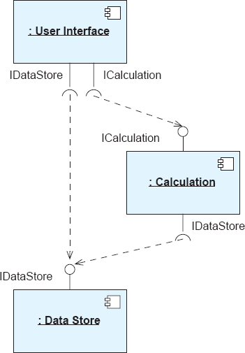
Figuras 6-9. Diagrama de componentes do módulo lunar em UML.
Módulo lunar em UML. O UML oferece muitos pontos de vista possíveis para modelar a arquitetura do módulo lunar. As partes interessadas são responsáveis por escolher quais pontos de vista são usados e quão precisa será cada visão. Aqui, usaremos os pontos de vista componente, statechart e sequência para descrever o módulo lunar com aproximadamente o mesmo nível de detalhe mostrado na linguagem natural e nos exemplos gráficos informais.
O diagrama dos componentes do Lunar Lander pode parecer com as Figuras 6-9.[9] Este diagrama se assemelha muito ao diagrama gráfico informal, pois representa em grande parte o mesmo aspecto da arquitetura. Diferente do diagrama gráfico informal, porém, este diagrama possui uma sintaxe rigorosa e alguma semântica subjacente. Os símbolos usados estão documentados na especificação UML e possuem significados específicos. Diferente das caixas tridimensionais simples destinadas a representar componentes na visualização PowerPoint do Lunar Lander, o símbolo bem definido "componente" UML é usado aqui. Isso não quer dizer que o diagrama seja completamente inequívoco por exemplo, o diagrama não diz nada sobre o que é um componente nesse contexto, ou quando e como as chamadas entre os componentes são feitas. Alguns desses detalhes podem ser especificados em outros diagramas UML.
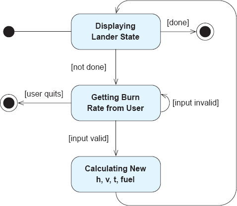
Figura 6-10. Diagrama do mapa de estado do módulo lunar em UML.
O comportamento do sistema pode ser especificado em um diagrama de statechart UML, como mostrado nas Figuras 6-10. O estado inicial é indicado pelo círculo escuro simples, e o estado final é indicado pelo círculo escuro delineado. Cada retângulo arredondado representa um estado do sistema, e setas representam transições entre os estados. As condições entre colchetes indicam guardas que restringem quando as transições de estado podem ocorrer.
Este mapa de estado indica que o sistema de módulo lunar começa exibindo o estado do módulo de pouso (módulo de pouso em si). Se a simulação for concluída, o simulador vai parar. Caso contrário, o sistema solicitará uma taxa de queima ao usuário. Aqui, o usuário pode optar por encerrar o programa mais cedo. Caso contrário, se a taxa de queima for válida, o programa então calculará o novo estado do simulador e o exibirá. Esse loop de controle se repete até que a simulação seja concluída.
Embora esse diagrama de statechart forneça uma descrição mais rigorosa e formal do comportamento do sistema do que a descrição em linguagem natural ou a descrição da arquitetura gráfica informal, ele omite alguns detalhes importantes contidos em ambas as descrições ou seja, quais componentes realizam as ações especificadas. Essas informações podem ser capturadas em outro diagrama UML, como um diagrama de sequência UML.
Um diagrama de sequência para a aplicação do módulo lunar pode se assemelhar à Figura 6-11. Este diagrama representa uma sequência particular de operações que pode ser realizada pelos três componentes do módulo lunar. Diagramas de sequência como este não têm a intenção de capturar todo o comportamento de um sistema; em vez disso, são usados para documentar cenários ou casos de uso específicos. O diagrama acima mostra um cenário nominal a Interface do Usuário recebe uma taxa de queima do usuário, o Cálculo recupera o estado do módulo de pouso do Repositório de Dados e o atualiza, e então retorna o estado de término do módulo para a Interface do Usuário.
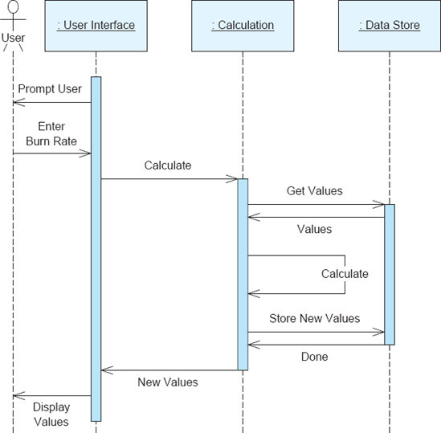
Figuras 6-11. Diagrama de sequência do módulo lunar em UML.
As Figuras 6-9, 6-10 e 6-11 representam três visões diferentes da arquitetura do Lunar Lender. Essas visões capturam tanto aspectos estáticos (estruturais) quanto dinâmicos (comportamentais) do sistema. Uma pergunta natural é se essas visões são consistentes entre si. Não existe uma forma padrão de responder a essa pergunta, pois não existe uma noção universal de consistência no UML. Em vez disso, precisamos estabelecer nossos próprios critérios de consistência e comparar as opiniões com esses critérios. Por exemplo, poderíamos verificar se cada componente no diagrama de componentes está representado no diagrama de sequência, e se as chamadas no diagrama de sequência são permitidas pelas setas de dependência no diagrama de componentes.
Verificar a consistência do mapa de estados e dos diagramas de sequência é uma tarefa mais difícil. Esses dois diagramas modelam aspectos comportamentais da arquitetura em níveis substancialmente diferentes. O diagrama de estados descreve o funcionamento geral do sistema sem considerar sua estrutura, enquanto o diagrama de sequência mostra um cenário particular em um contexto diferente: as interações entre componentes. Neste caso, inspeções e concordância com as partes interessadas provavelmente são a melhor forma de determinar a consistência dos diagramas.
Conclusão. UML é uma notação sintaticamente rica com amplo suporte a ferramentas. Como forma de expressar decisões de design arquitetônico, é superior a uma notação apenas de símbolos, como a do PowerPoint. No entanto, a ambiguidade proposital da UML sobre o significado da maioria de seus símbolos a deixa vulnerável a abusos. Mesmo grupos de desenvolvimento bem-intencionados podem interpretar os mesmos diagramas UML de maneiras diferentes, especialmente quando as partes interessadas estão geograficamente separadas e não têm oportunidades presenciais para chegar a um entendimento mútuo. Quando o UML é empregado, perfis devem ser desenvolvidos e usados para garantir modelagem consistente, embora isso não garanta necessariamente interpretações inequívocas. Perfis não são uma solução mágica.
Linguagens Iniciais de Descrição de Arquitetura
A década de 1990 gerou quase uma década de pesquisas sobre como capturar melhor arquiteturas de software. O resultado dessa pesquisa foi a proliferação de linguagens de descrição de arquitetura (ADLs), notações desenvolvidas especificamente para modelagem de arquitetura de software.
Durante esse período, houve um debate substancial sobre o que constitui ou não arquitetura de software. Esse debate continua até hoje. Um debate paralelo surgiu naturalmente: quais notações ou abordagens de modelagem podem ser chamadas de "linguagens de descrição de arquitetura?" Não existe um teste decisivo estabelecido para determinar se uma notação específica pode ou não ser chamada de ADL, e há uma variabilidade significativa no espectro de línguas identificadas por seus criadores como ADLs. Nenad Medvidović e Richard Taylor (Medvidović e Taylor 2000) pesquisaram uma grande variedade de ADLs iniciais e descobriram que o denominador comum entre eles era o apoio explícito à modelagem:
Além disso, descobriram que as línguas identificadas como AVDs tendiam a ser semanticamente precisas, mas careciam de amplitude e flexibilidade. Isso refletia em grande parte o sentimento predominante sobre arquitetura de software; ou seja, que era uma visão estrutural de alto nível de um sistema estendido com semântica rica.
Este livro tem uma visão muito mais ampla sobre arquitetura de software. Embora visões de componentes e conectores de alto nível ainda sejam importantes ao descrever a arquitetura de um sistema de software, nossa definição de arquitetura como o conjunto das principais decisões de design sobre um sistema abrange uma gama muito mais ampla de conceitos.
Durante a década de 1990, houve um debate significativo sobre se notações de design como UML poderiam ser chamadas de "linguagens de descrição de arquitetura". As primeiras versões do UML não tinham suporte explícito para modelagem no estilo componente e conector, bem como semântica precisa, levando muitos pesquisadores a concluir que o UML não era, de fato, uma linguagem de descrição de arquitetura. Em nossa concepção mais ampla de arquitetura, qualquer linguagem usada para capturar decisões principais de projeto é, na prática, uma linguagem de descrição de arquitetura, incluindo UML.
As linguagens de descrição arquitetônica de "primeira geração" descritas neste capítulo são, em sua maioria, projetos de pesquisa. Nenhuma dessas ainda é usada ativamente na prática. Apresentamos aqui por causa de suas contribuições únicas para o campo da modelagem arquitetônica, mas seu uso na prática pode ser difícil por razões extrínsecas, como a falta de suporte atual às ferramentas.
Darwin
Darwin (Magee et al. 1995) é uma linguagem de descrição de arquitetura de uso geral para especificar a estrutura de sistemas compostos por componentes que se comunicam por meio de interfaces explícitas. Darwin possui uma representação textual canônica na qual os componentes e suas interconexões são descritos. Há uma visualização gráfica associada que retrata configurações de Darwin de forma mais acessível, porém menos precisa.
Em Darwin, sistemas são modelados como um conjunto de componentes interconectados. Não existe a noção de conectores de software explícitos em Darwin, mas um componente que facilita interações pode ser interpretado como um conector. Componentes Darwin expõem um conjunto de serviços fornecidos e necessários, às vezes chamados de portas. Os serviços em Darwin correspondem à nossa noção de interfaces arquitetônicas fornecidas e necessárias. As configurações são especificadas por um conjunto de ligações entre interfaces. Darwin também suporta composição hierárquica ou seja, componentes que possuem estruturas internas que também consistem em componentes, serviços e ligações.
Rubrica de Avaliação para Darwin
|
Escopo e Propósito |
Estruturas de sistemas distribuídos que se comunicam por meio de interfaces bem definidas. |
|
Elementos Básicos |
Componentes, interfaces (necessárias e fornecidas), links (chamados de bindings), composição hierárquica. |
|
Estilo |
Suporte limitado por meio do uso de construções parametrizáveis. |
|
Aspectos Estáticos e Dinâmicos |
Suporte para vistas estruturais estáticas, suporte adicional para arquiteturas dinâmicas (por exemplo, aquelas que mudam em tempo de execução) por meio de instância e vinculação dinâmica direta e preguiçosa. |
|
Modelagem Dinâmica |
Não disponível. |
|
Aspectos Não Funcionais |
Não disponível. |
|
Ambiguidade |
Como os construtos de Darwin (por exemplo, componentes, interfaces) podem ser compostos e usados dentro de um modelo de Darwin está bem definido. Seu significado externo (por exemplo, o que significa ser um componente ou uma interface) está sujeito à interpretação das partes interessadas. |
|
Exatidão |
Darwin pode ser modelado no formalismo conhecido como cálculo pi, que permite verificar a consistência interna dos modelos. |
|
Precisão |
Detalhes limitados a elementos estruturais e suas interconexões. |
|
Vista |
Pontos de vista estruturais, pontos de vista de implantação por meio do uso de composição hierárquica. |
|
ver Consistência |
Não disponível. |
Módulo lunar em Darwin. Darwin é principalmente uma notação de descrição estrutural, e podemos usá-la para descrever a estrutura do módulo lunar de três componentes. A visualização textual do módulo lunar em Darwin pode ser expressa conforme mostrado na Figura 6-12. Aqui, cada componente é descrito com interfaces explícitas fornecidas e necessárias. A estrutura geral da aplicação é definida usando um componente de nível superior com uma estrutura interna; ou seja, o próprio aplicativo Lunar Lander é um componente que contém os componentes Interface de Usuário, Cálculo e DataStore.
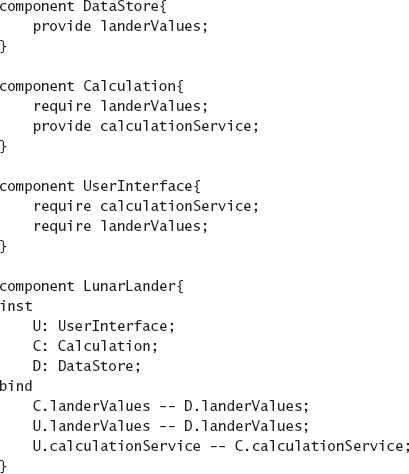
Figuras 6-12. Arquitetura do módulo lunar na visualização textual de Darwin.
Como mencionado acima, Darwin também possui uma visualização gráfica canônica; o modelo expresso nessa visualização pode se parecer com a Figura 6-13. O uso de múltiplas visualizações para representar o mesmo modelo arquitetônico será amplamente discutido no próximo capítulo.
Um dos aspectos mais interessantes de Darwin é o conjunto de construções com as quais configurações de componentes podem ser especificadas. Muitas ADLs declarativas simplesmente enumeram todos os componentes e ligações em uma arquitetura um por um (e Darwin apoia isso o modelo acima do módulo lunar usa Darwin dessa forma). No entanto, Darwin também suporta a criação de configurações usando construções semelhantes a linguagens de programação, como loops. Por exemplo, considere uma aplicação Web onde vários clientes idênticos estão todos conectados ao mesmo servidor Web. Podemos modelar essa arquitetura em Darwin, mostrada na Figura 6-14.
Graficamente, esse modelo pode parecer com a Figura 6-15. Neste modelo de Darwin, o número real de clientes é parametrizável. Usando essas facilidades, modelos relativamente concisos podem ser construídos que descrevem uma grande variedade de arquiteturas sem grande redundância no modelo.
Conclusão. Darwin representa uma forma mais rigorosa e formal de capturar a estrutura de uma arquitetura do que qualquer notação que vimos até agora no capítulo. Ele fornece uma sintaxe textual bem definida com uma visualização gráfica associada, juntamente com semântica específica e bem definida. Não é excessivamente complexo e pode ser compreendido apenas com leitura direta. Para modelagem estrutural, Darwin é uma excelente escolha. Para modelar outros aspectos da arquitetura, entretanto, outras notações devem ser usadas.
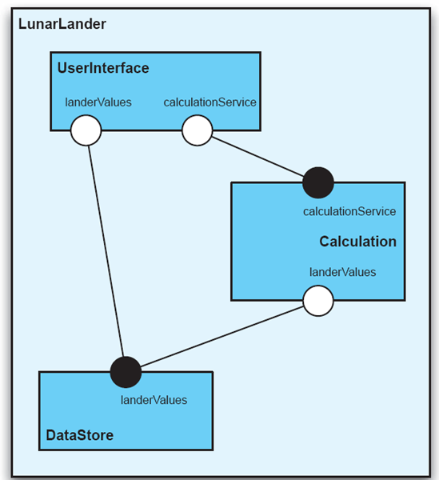
Figuras 6-13. Arquitetura do módulo lunar na representação gráfica de Darwin.
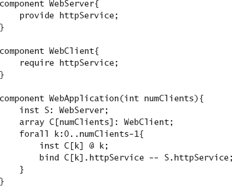
Figuras 6-14. Modelo de uma aplicação Web multicliente na visualização textual de Darwin.
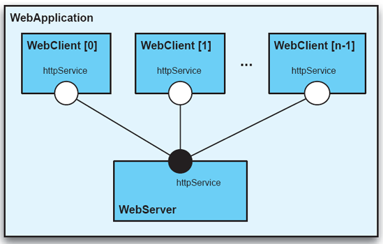
Figura 6-15. Modelo de uma aplicação Web multicliente na visualização gráfica de Darwin.
Rapide
Rapide (Luckham et al. 1995) é uma linguagem de descrição de arquitetura desenvolvida para especificar e explorar propriedades dinâmicas de sistemas compostos por componentes que se comunicam por meio de eventos. No Rapide, eventos são simplesmente o resultado de uma atividade ocorrendo na arquitetura. Chamadas tradicionais de procedimento são expressas como um par de eventos: um para a chamada e outro para o valor de retorno.
O poder do Rapide vem de sua organização dos eventos em conjuntos parcialmente ordenados, chamados POSETs (Luckham 2002). Componentes rápidos atuam simultaneamente, emitindo e respondendo a eventos. Existem relações causais entre alguns eventos: por exemplo, se um componente recebe o evento A e responde emitindo o evento B, então existe uma relação causal de (A→B). Relações causais entre os eventos A e B no Rapide existem quando qualquer uma das seguintes situações é verdadeira (da documentação do Rapide):
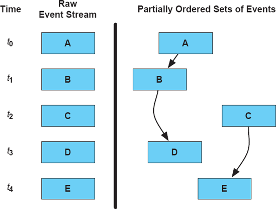
Figuras 6-16. Conjuntos parcialmente ordenados de eventos.
À medida que um programa é executado, seus diversos componentes geram uma série de eventos ao longo do tempo. Alguns desses eventos estarão causalmente relacionados (por uma das relações acima). Alguns deles podem ocorrer na mesma época que outros eventos, mas não têm relação causal.
As figuras 6-16 retratam essa situação. A parte esquerda da figura mostra um fluxo bruto de eventos ao longo do tempo: Componentes na arquitetura enviam eventos A, B, C, D e E nos momentos t 0 a t 4, respectivamente. Esses eventos são ordenados temporalmente, mas não causalmente. A parte direita da figura mostra a ordenação causal dos eventos. Aqui, existem duas sequências de ordem parcial: uma consistindo nos eventos A, B e D, e outra consistindo nos eventos C e E. Isso é chamado de ordem parcial porque nem todos os eventos são causalmente ordenados em relação aos outros. O fato de B ter ocorrido antes de C é apenas uma coincidência um acidente do agendador: C poderia muito bem ter ocorrido antes de B.
O Rapide foca em capturar aspectos dinâmicos das arquiteturas de software. Especificações de arquitetura no Rapide são interessantes porque são executáveis. O Rapide é acompanhado por uma ferramenta que permite aos usuários executar a descrição da arquitetura, simulando na prática a operação do sistema descrito. O resultado é um gráfico de eventos semelhante ao mostrado acima na Figura 6-16, mostrando os eventos como nós e ordenações causais como arestas direcionadas.
Rubrica de Avaliação para o Rapide
|
Escopo e Propósito |
Interações entre componentes em termos de conjuntos parcialmente ordenados de eventos. |
|
Elementos Básicos |
Arquiteturas (estruturas), interfaces (componentes), ações (mensagens/eventos) e operações que descrevem como as ações estão relacionadas entre si. |
|
Estilo |
Não disponível. |
|
Aspectos Estáticos e Dinâmicos |
As interconexões entre os componentes capturam a estrutura estática da arquitetura, ações e comportamentos capturam aspectos dinâmicos da arquitetura. |
|
Modelagem Dinâmica |
Modelos arquitetônicos não mudam durante a execução, embora algumas ferramentas forneçam capacidades limitadas de animação. |
|
Aspectos Não Funcionais |
Não disponível. |
|
Ambiguidade |
A semântica dos comportamentos é bem definida. |
|
Exatidão |
Um simulador automático produz resultados que podem ser examinados para determinar se o comportamento da arquitetura corresponde às expectativas. Restrições Rapide também podem ser verificadas automaticamente para detectar violações. |
|
Precisão |
Interconexões e comportamentos em termos de trocas de eventos podem ser modelados em detalhes. |
|
Vista |
Um único ponto de vista estrutural/comportamental. |
|
ver Consistência |
Não há como verificar automaticamente a consistência da visualização (por exemplo, entre múltiplos modelos que descrevem a mesma arquitetura). As inspeções podem ser usadas para verificar a consistência entre as saídas do simulador. |
Módulo lunar em Rapide. A descrição do módulo lunar em Rapide parece, à primeira vista, semelhante a uma descrição de Darwin: uma notação textual semelhante a uma linguagem de programação é usada para definir os componentes e suas operações de interface. No entanto, a descrição do Rapide também inclui informações comportamentais. Essas informações são usadas, juntamente com a estrutura da aplicação, para gerar grafos de eventos. Como o Rapide é otimizado para operar em aplicações concorrentes onde múltiplos fios de controle interagem, o usaremos para avaliar uma versão cooperativa para dois jogadores do Lunar Lander.
Tal arquitetura pode ser especificada, como mostrado na Figura 6-17. Essa especificação começa definindo os tipos de componentes disponíveis principalmente em termos de suas interfaces. Cada interface possui vários eventos que pode receber e enviar ("ações de entrada" e "de saída", respectivamente). Cada componente também tem uma especificação comportamental, definindo como reage a diferentes eventos. Este exemplo simples aproveita apenas um pequeno número de recursos da linguagem Rapide; Ele também tem suporte para definir e manipular os dados que compõem os eventos. Uma especificação mais complexa do Lunar Lander poderia realmente simular todo o jogo do Lunar Lender, incluindo dados, novos cálculos de estado e assim por diante.
Ao final da especificação, a estrutura do sistema é definida: primeiro componentes que implementam os vários tipos de interface, e depois links entre as interfaces componentes. Essa arquitetura Rapide é relativamente simples: os jogadores começam enviando uma taxa de queima atualizada, fazendo seu primeiro movimento do jogo. Depois, eles esperam a atualização do visor com novo status antes de fazer outra mudança. Os jogadores estão limitados a três movimentos nesse sistema, então o jogo não entra em um ciclo infinito (já que não há outra condição de final de jogo). O componente Calculation aguarda um evento SetBurnRate. Quando recebe um, ele dispara um evento interno, CalcNewState, e depois envia uma mensagem DoSetValues para o componente DataStore para atualizar o estado do jogo. Quando o estado do jogo é atualizado, a DataStore dispara um evento NotifyNewValues, que faz com que as visualizações dos jogadores sejam atualizadas, incentivando-os a fazer seus próximos movimentos.
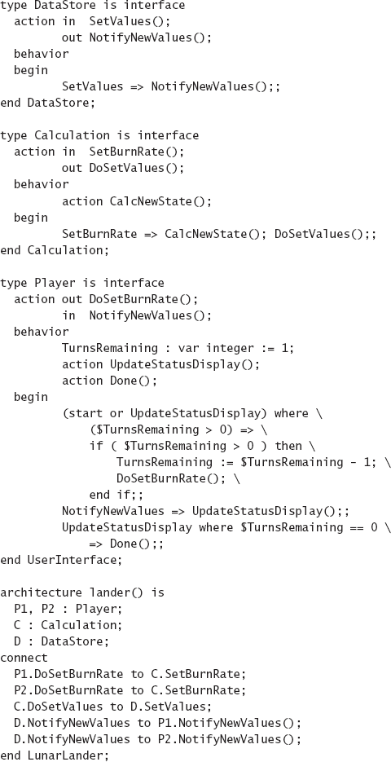
Figura 6-17. Arquitetura cooperativa de Lunar Lander para dois jogadores no Rapide.
Em prosa, como descrito aqui, essa estratégia de implementação pode soar perfeitamente razoável. Mas será que é? As capacidades de análise e simulação da Rapide podem ajudar a tomar essa determinação. Se removermos o segundo jogador da especificação para criar apenas um jogo para um jogador e rodarmos o simulador Rapide, um gráfico como o da Figura 6-18 é gerado. O único aspecto contraintuitivo desse gráfico é o grupo de eventos de "iniciação" que são disparados inicialmente. Como uma das principais áreas de foco do Rapide são arquiteturas concorrentes, ele tenta acionar o processamento simultâneo carregando a simulação com vários eventos de "início" no início. Para um jogador, esse traço de Lunar Lander parece razoável.
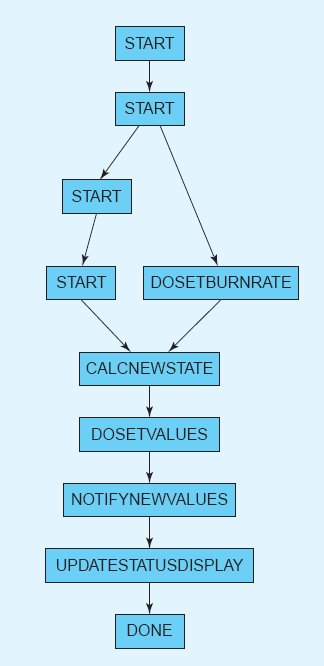
Figura 6-18. Grafo de eventos de uma arquitetura Lunar Lander para um jogador.
A versão para dois jogadores do gráfico, mostrada na Figura 6-19, é mais complexa. Isso é esperado. No entanto, ao examinar as setas de causalidade, podemos ver que algo não está totalmente certo. Os dois caminhos estão entrelaçados. As requisições estão se misturando, já que não há suporte a travamento ou transação nesse design. Além disso, podemos ver uma quantidade de atualizações de tela na parte inferior. A tela de cada usuário é atualizada duas vezes uma para seu próprio movimento e outra para o parceiro. Por um turno, isso é aceitável, mas lembre-se que a especificação exige que o jogador faça um movimento a cada atualização do display. Com mais jogadores e mais movimentos, vêm mais atualizações de exibição, e cada uma faz o jogador tentar se mover, aumentando ainda mais o efeito do intercalamento. Este é um bug não óbvio na especificação: Todos os jogadores não devem se mover reativamente após cada atualização de tela. Sem os gráficos de Rapide, no entanto, não é fácil ver isso. Esse é o tipo de bug que pode permanecer despercebido até ser descoberto no final do desenvolvimento durante a implementação ou teste, quando é caro corrigir.
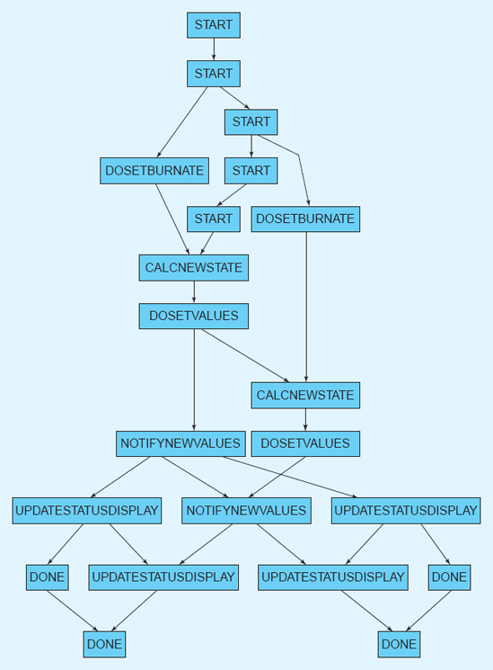
Figura 6-19. Gráfico de eventos de uma arquitetura Lunar Lander para dois jogadores.
Conclusão. O Rapide aborda diretamente aspectos dinâmicos da arquitetura e oferece suporte de ferramentas para a simulação desses aspectos. As partes interessadas podem ver diretamente como os componentes de um sistema de software são projetados para interagir e dependem uns dos outros ao analisar os resultados dessas simulações. No entanto, o Rapide apresenta várias desvantagens significativas: a notação é obscura, com uma curva de aprendizado íngreme e carece de suporte para implementar arquiteturas de forma consistente com suas especificações.
Wright
Wright (Allen e Garlan 1997) está focado em verificar as interações dos componentes por meio de suas interfaces. As interfaces em Wright são especificadas usando uma notação derivada do formalismo Communicating Sequential Processes (CSP) (Hoare 1978). As especificações Wright podem ser traduzidas para CSP e depois analisadas com uma ferramenta de análise CSP como FDR [Formal Systems (Europe) Ltd. 2005]. Essas análises podem determinar, por exemplo, se as interfaces conectadas são compatíveis e se o sistema vai travar. Além disso, Wright tem a capacidade de especificar restrições estilísticas como predicados sobre instâncias.
Critério de avaliação para Wright
|
Escopo e Propósito |
Estruturas, comportamentos e estilos de sistemas compostos por componentes e conectores comunicantes. |
|
Elementos Básicos |
Componentes, conectores, portas e funções (equivalentes a interfaces), acessórios, estilos. |
|
Estilo |
Suportado por meio de predicados sobre modelos de instância. |
|
Aspectos Estáticos e Dinâmicos |
Modelos estruturais estáticos são anotados com especificações comportamentais que descrevem como componentes e conectores devem tanto se comportar quanto interagir. |
|
Modelagem Dinâmica |
Não disponível. |
|
Aspectos Não Funcionais |
Não disponível. |
|
Ambiguidade |
As especificações de Wright podem ser traduzidas para o formalismo CSP e, assim, possuem uma base semântica formal. No entanto, o significado externo (por exemplo, especificamente o que significa ser um componente ou um conector) não é especificado. |
|
Exatidão |
Wright pode ser modelado no formalismo conhecido como CSP, que permite que os modelos sejam automaticamente verificados, por exemplo, quanto à consistência estrutural e à liberdade de deadlocks. |
|
Precisão |
Pode descrever estruturas arquitetônicas e seu comportamento em grande detalhe (na verdade, especificações formais comportamentais são necessárias para análise). |
|
Vista |
Pontos de vista estruturais, comportamentais, de estilo. |
|
Consistência de Visualização |
Aspectos estruturais e comportamentais estão entrelaçados porque o comportamento é especificado como uma decoração em elementos estruturais. A consistência entre estilo e instâncias pode ser determinada automaticamente com um avaliador CSP. |
Módulo lunar em Wright. Os aspectos estruturais do módulo lunar Land modelado em Wright, se parecem com representações que já vimos anteriormente (por exemplo, em um diagrama de componentes UML ou Darwin). A característica distintiva de Wright são as especificações formais baseadas em CSP para interfaces e comportamento componente/conector. Essas especificações podem ser especificadas em uma notação que se assemelha a equações matemáticas, ou em uma notação ASCII equivalente (ainda que menos decorativa). Módulo lunar, especificado em Wright, pode se parecer com isso na Figura 6-20.
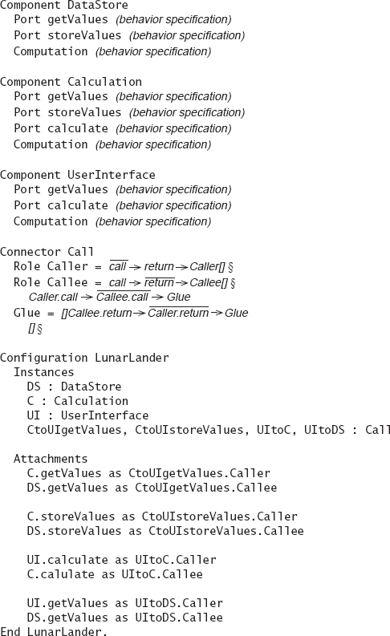
Figura 6-20. Lunar Lander modelado em Wright. Algumas especificações comportamentais são omitidas por simplicidade, mas o conector de chamada é totalmente especificado.
O principal ponto a notar sobre essa especificação é o conjunto detalhado de especificações formais de comportamento. O formalismo CSP, embora semanticamente correto e bem documentado, é um tanto obscuro e possui uma curva de aprendizado íngreme que é bastante diferente de aprender, por exemplo, uma nova linguagem de programação. O valor dessas especificações é que propriedades como a liberdade de bloqueio podem ser analisadas, que são difíceis ou impossíveis de detectar em sistemas implementados em linguagens de programação tradicionais.
Conclusão. As especificações formais de Wright têm uma curva de aprendizado extremamente alta e sobrecarga cognitiva mesmo para os sistemas mais simples. As capacidades de análise são poderosas, mas limitadas a um pequeno conjunto de propriedades (como a liberdade de bloqueios). No entanto, a modelagem formal extensa pode valer o esforço, por exemplo, em sistemas críticos para segurança. Falta suporte para refinar especificações arquitetônicas em implementações. Como outras ADLs antigas, Wright não é ativamente utilizado nem apoiado atualmente.
ADLs específicas por domínio e estilo
As ADLs analisadas acima são adequadas para descrever uma grande variedade de sistemas de software em muitos domínios e estilos arquitetônicos. No entanto, algumas ADLs são específicas de domínio ou estilo, ou pelo menos otimizadas para descrever arquiteturas em um determinado domínio ou estilo.
As AVDs específicas de domínio e estilo são importantes por vários motivos. Primeiro, o escopo deles é melhor adaptado às necessidades das partes interessadas, já que eles têm como alvo um grupo específico de stakeholders, em vez de desenvolvedores de software e sistemas em geral. Segundo, eles conseguem deixar de fora detalhes desnecessários e construções excessivamente verbosas porque há pouca necessidade de genericidade. Suposições sobre o domínio ou estilo podem ser codificadas diretamente na semântica da ADL, em vez de serem repetidas em todos os modelos. Por exemplo, se um determinado estilo exige o uso de um único tipo de conector entre cada par de componentes ligados, não há necessidade de incluir a noção de conector na ADL os usuários e o conjunto de ferramentas da ADL podem simplesmente assumir que tais conectores existem implicitamente em cada link.
Exemplos de ADLs específicas de domínio e estilo incluem Koala, Weaves e AADL. Já falamos sobre o coala anteriormente; é uma ADL usada para modelar famílias de dispositivos eletrônicos de consumo. Weaves é tanto um estilo arquitetônico quanto uma ADL associada para modelagem de sistemas compostos por componentes que interagem por meio de fluxos de objetos. AADL é uma ADL industrial voltada para modelagem de sistemas embarcados em tempo real (tanto de hardware quanto de software).
Coala
Koala (van Ommering et al. 2000) foi desenvolvido pela Philips Electronics para capturar a arquitetura de dispositivos eletrônicos de consumo, como televisores, videocassetes e players de DVD. É, em grande parte, uma ADL específica de domínio foi desenvolvida para o uso específico de uma empresa para modelar software em um único domínio a fim de resolver questões específicas dentro desse domínio. Os sistemas de software que a Koala modela são compostos por componentes de software interconectados que se comunicam por meio de interfaces explícitas fornecidas e necessárias.
Semanticamente e sintaticamente, Koala é descendente de Darwin. Ele utiliza os conceitos estruturais de Darwin sobre portas de entrada e saída, mas os expande por meio da adição de construções para suportar arquiteturas de linha de produto. Linhas de produtos foram introduzidas anteriormente, emCapítulo 1. As linhas de produtos são comuns no domínio de eletrônicos de consumo, onde um único produto, como uma televisão, pode ter várias variações de recursos: tamanho diagonal, entradas e saídas de áudio/vídeo, e componentes opcionais como videocassetes integrados, players de DVD ou ambos. Documentar separadamente as arquiteturas de software de cada um desses produtos seria redundante e propenso a erros, já que substancialmente os mesmos elementos seriam repetidos repetidamente em cada produto. O koala resolve isso possuindo construtos específicos na linguagem para definir explicitamente pontos de variação. Dessa forma, múltiplos produtos podem ser descritos com um único modelo, com diferenças entre os produtos codificadas como pontos de variação.
Os conceitos de linha de produtos em Koala serão discutidos em detalhes mais adiante neste livro, especificamente emCapítulo 15. Adiamos a discussão dos detalhes da notação até lá; Leitores interessados devem pular à frente. A rubrica de avaliação para Koala é apresentada aqui para completude.
Rubrica de Avaliação para Koala
|
Escopo e Propósito |
Captura da estrutura, configuração e interfaces de componentes no domínio de dispositivos eletrônicos de consumo embarcados. |
|
Elementos Básicos |
Componentes, interfaces e construções para especificar pontos explícitos de variação: interfaces de diversidade, interruptores e multiplexadores. |
|
Estilo |
Descrições de coalas capturam simultaneamente as arquiteturas de produtos relacionados e variantes, e isso pode ser visto como definindo um estilo arquitetônico restrito. |
|
Aspectos Estáticos e Dinâmicos |
Apenas estrutura estática e interfaces são modeladas. |
|
Modelagem Dinâmica |
Embora os pontos de variação sejam definidos estaticamente na arquitetura, a seleção das variantes pode mudar em tempo de execução. |
|
Aspectos Não Funcionais |
Não é explicitamente modelado. |
|
Ambiguidade |
Elementos de coala são concretos e estreitamente mapeados às implementações. |
|
Exatidão |
Modelos de coalas possuem regras e padrões de interconexão bem definidos. Elementos de koala também são mapeados de perto para implementações. Erros em modelos devem ser relativamente fáceis de identificar procurando violações de padrões ou problemas de implementação, como erros de compilador. |
|
Precisão |
A configuração de um sistema é bem definida em um modelo de Koala, mas outros aspectos do sistema não são especificados. |
|
Vista |
Ponto de vista estrutural com pontos explícitos de variação. |
|
Consistência de Visualização |
Em geral, as especificações do Koala não incluem múltiplas vistas. |
Tece
Weaves (Gorlick e Razouk 1991) é tanto um estilo arquitetônico quanto uma notação acompanhante. Weaves é usado para modelar sistemas de comunicação de "fragmentos de ferramenta" de grão pequeno que processam objetos de dados. As tecelagem podem ser vistas como uma variante do estilo tubo e filtro com três diferenças significativas. Primeiro, os fragmentos da ferramenta Weaves processam fluxos de objetos em vez dos fluxos de bytes do pipe-and-filter. Segundo, conectores Weaves são filas de objetos de tamanho explícito, enquanto conectores pipe-and-filter são pipes implícitos. Conectores Weaves servem para facilitar tanto a transferência de dados quanto o controle entre componentes. Eles recebem objetos das portas de entrada, retornam o controle ao fragmento da ferramenta que chama e então passam o objeto para fragmentos de ferramenta nas portas de saída em um thread de controle separado. Terceiro, as ferramentas Weaves podem ter múltiplas entradas e saídas, enquanto componentes pipe-and-filter têm uma entrada e uma saída.
A Figura 6-21 mostra uma arquitetura básica expressa na notação Weaves. O componente Fragmento de Ferramenta 1 gera um fluxo de objetos para um conector de fila explícito Q1, que bifurca o fluxo e encaminha os objetos tanto para o Fragmento da Ferramenta 2 quanto para o Fragmento da Ferramenta 3. Como é óbvio neste diagrama, a notação Weaves é gráfica e minimalista: os componentes são representados por caixas sombreadas e os conectores de fila são representados por caixas simples; As configurações são expressas usando setas direcionadas conectando componentes e conectores.
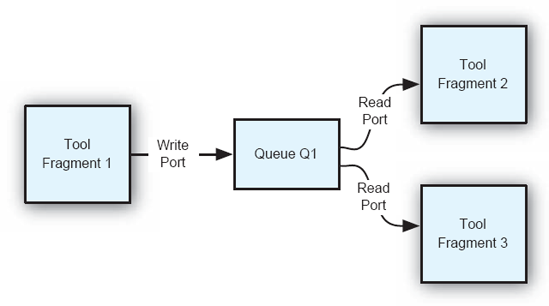
Figura 6-21. Uma trama básica na notação de Tecelagem.
Embora a notação Weaves seja mínima, ela é adequada para servir como uma notação descritiva para o estilo Weaves. Aqui, a complexidade adicional é desnecessária: a extrema simplicidade e franqueza de Weaves facilitam a compreensão e a interpretação, e as interpretações semânticas dos poucos elementos são fornecidas pelo próprio estilo.
Rubrica de Avaliação para Tecelagem
|
Escopo e Propósito |
A estrutura e configuração dos componentes em arquiteturas que se conformam ao estilo arquitetônico Tecelado. |
|
Elementos Básicos |
Componentes, conectores (filas) e interconexões direcionadas. |
|
Estilo |
Os modelos de Teanças seguem o estilo arquitetônico de Teanças; as restrições desse estilo específico são implícitas no modelo. |
|
Aspectos Estáticos e Dinâmicos |
Apenas a estrutura estática é modelada. |
|
Modelagem Dinâmica |
Embora não haja suporte direto para modelagem dinâmica, o estilo Weaves estabelece uma correspondência próxima entre os componentes do modelo arquitetônico e os componentes da implementação; as mudanças rastreadas em um podem ser aplicadas diretamente ao outro. |
|
Aspectos Não Funcionais |
O estilo Weaves induz certas propriedades não funcionais em sistemas, mas elas não são explicitamente modeladas. |
|
Ambiguidade |
O significado dos elementos de Weaves é bem definido e não ambíguo. |
|
Exatidão |
Erros nos modelos se limitam a links quebrados e problemas de interconexão, que são fáceis de identificar. Deveria ser facilmente possível determinar se as implementações correspondem aos modelos Weaves, já que existe uma correspondência próxima estabelecida pelo estilo. |
|
Precisão |
A configuração dos componentes e conectores em um sistema é bem definida em um modelo Weaves, mas outros aspectos do sistema não são especificados. |
|
Vista |
Ponto de vista estrutural. |
|
Consistência de Visualização |
Em geral, as especificações de Weaves não incluem múltiplas vistas. |
Lunar Lander em Entrelaçamentos. Como Weaves é tanto uma notação de estilo quanto de descrição arquitetônica, expressar a arquitetura do Lunar Lander em Weaves significa algo diferente de expressá-la em uma notação mais neutra em termos de estilo, como UML ou Darwin. Os modelos reais são quase idênticos, mas mesmo sendo semelhantes, seus significados não são. Interpretar um modelo de Weaves deve ser feito sob a ótica do estilo arquitetônico Weaves: um componente em Weaves não é o mesmo que um componente em Darwin.
O sistema Lunar Lander pode ser expresso em Tramas como mostrado na Figura 6-22. Aqui, a estrutura do próprio sistema é diretamente influenciada pelo estilo arquitetônico Weaves. Os componentes aqui não se comunicam por meio de chamadas de procedimento de solicitação-resposta, mas sim por meio de fluxos de objetos. Os fluxos básicos de dados são semelhantes aos outros modelos apresentados acima. Uma diferença notável é a presença explícita de canais de retorno para dados: em Weaves, o fato de uma solicitação viajar da Interface do Usuário para o componente de Cálculo (no modelo acima, através da fila Q1) não implica que uma resposta retorne pelo mesmo caminho. O caminho dessa resposta deve ser explicitamente especificado e ter sua própria fila (Q2 no modelo).
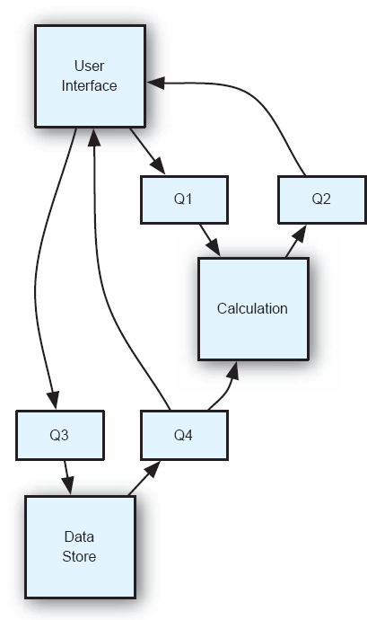
Figura 6-22. Modelo da aplicação do módulo lunar em Weaves.
Outra característica interessante do modelo Weaves é que ele fornece informações sobre conexões estruturais, mas não captura aspectos de como essas conexões são usadas (por exemplo, as sequências ou protocolos dos objetos que passam por elas). Esses detalhes podem ser especificados em um modelo adicional, em linguagem natural ou em uma notação mais formal. Para elaborar o modelo acima, podemos incluir a seguinte especificação de linguagem natural:
A conexão da Interface do Usuário para o Cálculo (via Q1)
transporta objetos que incluem uma taxa de queima e instruem o componente de
cálculo a calcular um novo estado do módulo de pouso. A conexão do Cálculo para
a Interface do Usuário (via Q2) indica quando o cálculo está completo e também
inclui o estado de término da aplicação. As conexões da Interface do Usuário e
Cálculo para o Armazenamento de Dados (via Q3) carregam objetos que atualizam
ou consultam o estado do módulo de aterrissagem. As conexões de volta para a
Interface do Usuário e o Cálculo a partir do Data Store (via Q4) carregam
objetos que contêm o estado do módulo de pouso e são enviadas sempre que o
estado do módulo é atualizado.
Conclusão. Weaves mostra como vincular uma notação a um determinado estilo pode simplificar muito essa notação. Sintaticamente, diagramas de Teança são extraordinariamente simples (ainda mais simples que diagramas de Darwin). No entanto, ao contrário de Darwin ou de outras ADLs de uso geral, os construtos nos diagramas de Teança têm significados mais específicos. A conexão de uma porta de leitura para uma porta de escrita não significa qualquer tipo de fluxo de dados ou controle. Na verdade, implica uma noção muito específica de controle e fluxo de dados envolvendo fluxos de objetos passados por componentes que rodam em threads independentes de controle. Quando um estilo está sendo utilizado, notações específicas de estilo podem reduzir significativamente a sobrecarga cognitiva de especificar e interpretar modelos de arquitetura.
A Linguagem de Análise e Design de Arquitetura (AADL)
A Linguagem de Análise e Design de Arquitetura (AADL, anteriormente Avionics Architecture Description Language) (Feiler, Lewis e Vestal 2003) é uma linguagem de descrição de arquitetura para especificar arquiteturas de sistemas. Embora seu nome histórico indique que seu propósito inicial era modelar sistemas de aviônicos, a notação em si não está especificamente vinculada a esse domínio em vez disso, contém construtos e capacidades úteis para modelar uma grande variedade de sistemas embarcados e em tempo real, como sistemas automotivos e médicos. É um desdobramento da linguagem de descrição da arquitetura MetaH anterior (Binns et al. 1996), desenvolvida pela Honeywell.
Como muitas das outras ADLs que pesquisamos, a AADL pode descrever a estrutura de um sistema como um conjunto de componentes, embora a AADL tenha disposições especiais para descrever elementos de hardware e software, e a alocação de componentes de software ao hardware. Ele pode descrever interfaces para esses componentes tanto para o fluxo de controle quanto para os dados. Também pode capturar aspectos não funcionais dos componentes (como tempo, segurança e atributos de confiabilidade).
Sintaticamente, a AADL é principalmente uma linguagem textual, acompanhada por uma visualização gráfica e um perfil UML para capturar informações da AADL de diferentes maneiras. A sintaxe da linguagem textual é definida usando regras de produção Backus-Naur Form (BNF).
O elemento estrutural básico na AADL é o componente. Os componentes AADL são definidos em duas partes: um tipo de componente e uma implementação de componente. Um tipo de componente define as interfaces para um componente como ele interagirá com o mundo exterior. Uma implementação de componente é uma instância de um tipo específico de componente. Pode haver muitas instâncias do mesmo tipo de componente. A implementação do componente define o interior do componente sua estrutura interna e construção, e assim por diante. Um elemento adicional que afeta os componentes é a categoria do componente. A AADL define várias categorias (ou tipos) de componentes; Esses podem ser hardware (por exemplo, memória, dispositivo, processador, barramento), software (por exemplo, dados, subprogramas, threads, grupo de threads, processos) ou compostos (por exemplo, sistema). A categoria de um componente prescreve que tipos de propriedades podem ser especificadas sobre um componente ou tipo de componente. Por exemplo, uma thread pode ter um ponto e um prazo, enquanto a memória pode ter um tempo de leitura, um tempo de escrita e um tamanho de palavra.
A AADL é suportada por uma base crescente de ferramentas, incluindo um conjunto de plug-ins de código aberto para o ambiente de desenvolvimento de software Eclipse que oferecem suporte à edição e capacidades de importação/exportação por meio da Extensible Markup Language (XML) (Bray, Paoli e Sperberg-McQueen 1998). Um conjunto adicional de plug-ins está disponível para analisar vários aspectos das especificações AADL por exemplo, se todos os elementos estão conectados adequadamente, se o uso de recursos pelos diversos componentes excede os recursos disponíveis e se as latências de fluxo de ponta a ponta excedem os parâmetros de tempo disponíveis.
Rubrica de Avaliação para AADL
|
Escopo e Propósito |
Modelos multinível de hardware e software interconectados. |
|
Elementos Básicos |
Inúmeros elementos de hardware e software: redes, barramentos, portas, processos, threads e muitos outros. |
|
Estilo |
Sem suporte explícito. |
|
Aspectos Estáticos e Dinâmicos |
Captura principalmente aspectos estáticos de um sistema, embora propriedades possam capturar alguns aspectos dinâmicos. |
|
Modelagem Dinâmica |
Sem suporte explícito. |
|
Aspectos Não Funcionais |
Propriedades definidas pelo usuário podem capturar aspectos não funcionais, mas estes não podem ser analisados automaticamente. |
|
Ambiguidade |
Elementos como processos e barramentos têm análogos do mundo real ou físico com semântica bem compreendida. Propriedades adicionam detalhes sobre o comportamento para reduzir ambiguidades. |
|
Exatidão |
Propriedades estruturais e outras podem ser analisadas automaticamente com modelos suficientemente anotados. |
|
Precisão |
Propriedades nos elementos especificam características de cada elemento com detalhes suficientes para análise. |
|
Vista |
Diversos pontos de vista interconectados de hardware e software: sistema, processador, processo, thread, rede, e assim por diante. |
|
Consistência de Visualização |
O Ambiente de Ferramentas AADL de Código Aberto (OSATE) inclui vários plug-ins para diferentes verificações de consistência. |
Lunar Lander na AADL. A AADL captura os elementos de hardware e software de um sistema em grande detalhe, e os relaciona todos entre si. Assim, as especificações AADL que capturam todos esses elementos podem se tornar grandes. Por isso, aqui modelamos apenas uma parte do sistema Lunar Lander: o componente de Cálculo e sua conexão com o componente Data Store. Nesta versão do Lunar Lander, os dois componentes são conectados por um barramento físico Ethernet. Além disso, esta é uma versão em tempo real do Lunar Lander em vez de operar apenas quando o usuário insere uma taxa de queima, o componente de cálculo consulta e atualiza periodicamente o componente Data Store em intervalos regulares. Aqui, talvez a taxa de queima não seja entrada pelo usuário no teclado, mas lida em intervalos periódicos por um sensor conectado a um botão de taxa de queima. Isso é mais consistente com um estilo arquitetônico de sentido-computação-controle.
Essa parte do sistema Lunar Lander expressa em AADL pode se parecer com a Figura 6-23. A primeira coisa a notar sobre esse modelo é o nível de detalhe com que a arquitetura é descrita. Um componente (calculation_type.calculation) roda em um processador físico (the_calculation_processor), que executa um processo (calculation_process_type.one_thread), que por sua vez contém um único thread de controle (calculation_thread), todos podendo fazer dois tipos de chamadas de solicitação-resposta através das portas (request_get/response_get, request_store/response_store) por um barramento Ethernet (lan_bus_type.ethernet). Cada um desses diferentes níveis de modelagem está conectado por composição, mapeamento de portas e assim por diante. Esse nível de detalhe enfatiza a importância de ferramentas, como editores gráficos, para modelar essas informações de forma mais compreensível.
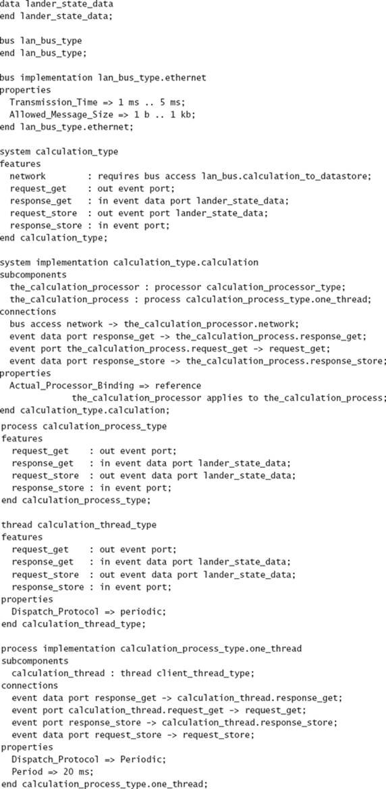
Figuras 6-23. Modelo parcial do módulo lunar no AADL.
A segunda coisa a se notar sobre essa especificação é o uso de propriedades para definir características específicas de alguns dos elementos (por exemplo, o processo de cálculo é executado periodicamente, a cada 20ms). Em uma especificação completa do sistema, essas propriedades seriam ainda mais detalhadas e elaboradas, e poderiam ser usadas por ferramentas para responder perguntas sobre disponibilidade e temporização que são críticas em um contexto em tempo real.
Conclusão. AADL é uma notação de alto custo e alto valor. A sintaxe e as capacidades da AADL são produto de uma quantidade significativa de pensamento e esforço de desenvolvimento, e os tipos de análises que podem ser feitas nas especificações da AADL não são triviais. No entanto, enquanto os usuários aproveitam o esforço dos desenvolvedores AADL, eles também têm seus próprios custos: as especificações AADL são complexas e extensas, mesmo para sistemas pequenos. Isso, por si só, acarreta riscos e custos significativos para os usuários. Para o domínio específico em que o AADL está posicionado (sistemas embarcados em tempo real), esses custos podem valer a pena: esses sistemas são frequentemente críticos para a segurança e caros ou impossíveis de reimplantar.
AVDs extensíveis
Há uma tensão natural entre a expressividade das linguagens de modelagem de uso geral, como UML, e o poder semântico de ADLs mais especializadas, como Wright, Weaves e Rapide. Por um lado, os arquitetos precisam da capacidade de modelar uma grande variedade de questões arquitetônicas. Por outro lado, eles precisam de linguagens semanticamente precisas para reduzir a ambiguidade e aumentar a capacidade de análise. Além disso, como discutimos, preocupações arquitetônicas e necessidades de produtos podem variar bastante de projeto para projeto. Uma solução é usar múltiplas notações, cada uma abordando um conjunto diferente de preocupações arquitetônicas. No entanto, isso dificulta manter os diferentes modelos consistentes e estabelecer a rastreabilidade entre eles. Além disso, mesmo usando múltiplas notações, podem existir certas preocupações que não podem ser adequadamente capturadas em nenhuma notação existente. Linguagens extensíveis de descrição de arquitetura podem ser usadas para combinar a flexibilidade de linguagens genéricas com a capacidade de análise e precisão de linguagens semanticamente ricas.
As ADLs extensíveis geralmente fornecem um conjunto básico de construções para descrever certas preocupações arquitetônicas comuns (por exemplo, componentes e conectores). Além disso, eles também incluem suporte (por meio da notação e ferramentas associadas) para estender a sintaxe da notação para suportar novas construções definidas pelo usuário. Em alguns casos, as extensões podem apenas modificar as construções base existentes. Outras notações permitem que os usuários criem construtos e conceitos totalmente novos.
A abordagem básica para empregar uma ADL extensível é a seguinte:
Na prática, as ADLs extensíveis podem ser vistas como "fábricas de ADL específicas de domínio." Por meio de mecanismos de extensão, os usuários podem adaptar essas ADLs para atender às necessidades de seu domínio ou projeto específico. Exemplos de ADLs extensíveis incluem Acme, ADML e xADL.
Topo
Acme (Garlan, Monroe e Wile 1997) é talvez o exemplo mais antigo de uma LAD que enfatizava a extensibilidade. A Acme possui um conjunto base de sete construtos: componentes e conectores, portas e funções (aproximadamente equivalentes à noção deste livro de interfaces em componentes e conectores, respectivamente), anexos (equivalentes às noções deste livro sobre links), sistemas (configurações de componentes, conectores, portas, papéis e anexos) e representações (arquiteturas internas para componentes e conectores). Esses construtos fornecem um vocabulário para expressar decisões de projeto estrutural sobre um sistema: basicamente, a composição dos componentes e conectores do sistema em forma de caixa e seta.
A extensibilidade no Acme é derivada pelo uso de propriedades. Propriedades são decorações que podem ser aplicadas a qualquer um dos sete tipos básicos de elementos. Propriedades são pares nome-valor opcionalmente tipados. Os nomes são strings simples, e os valores devem estar em conformidade com o tipo da propriedade, caso ela tenha um. O Acme inclui vários tipos simples de propriedades (inteiros, booleanos, e assim por diante), além da capacidade de definir tipos personalizados. De qualquer forma, do ponto de vista da Acme, propriedades e seus valores são não interpretados. Cabe a ferramentas escritas pelo usuário analisar essas propriedades (e qualquer estrutura interna que contenham) e fazer algo útil com o conteúdo (por exemplo, fornecer capacidades de análise ou visualização).
Originalmente, esperava-se que o uso principal do Acme seria como uma linguagem de intercâmbio de arquitetura, e não como uma ADL ou mesmo uma ADL extensível. Ou seja, desenvolvedores de outras ADLs como Wright e Rapide desenvolveriam tradutores que mapeavam suas linguagens para e a partir da Acme: dessa forma, modelos podiam ser trocados entre muitas ferramentas diferentes para, por exemplo, análise. Essa estratégia nunca foi aplicada em larga escala, possivelmente devido a diferenças semânticas substanciais e conflitos entre as ADLs alvo.
Rubrica de Avaliação para a Acme
|
Escopo e Propósito |
Modelagem dos aspectos estruturais de uma arquitetura de software, com a adição de propriedades para definir outros aspectos. |
|
Elementos Básicos |
Componentes, conectores, portas e funções (interfaces), anexos (links), representações (estrutura interna) e propriedades. |
|
Estilo |
Semelhanças estilísticas podem ser modeladas pelo uso do sistema de tipos de Acme. |
|
Aspectos Estáticos e Dinâmicos |
A estrutura estática é modelada nativamente, propriedades dinâmicas podem ser capturadas decorando os elementos estáticos com propriedades formatadas. |
|
Modelagem Dinâmica |
Uma biblioteca de software, a AcmeLib, permite que modelos Acme sejam manipulados programaticamente. |
|
Aspectos Não Funcionais |
Propriedades podem capturar aspectos não funcionais, mas estes não podem ser analisados automaticamente. |
|
Ambiguidade |
O uso de vários elementos (por exemplo, componentes e conectores) é bem definido, mas o que eles significam externamente (por exemplo, o que significa ser um componente) não é definido. Em geral, propriedades Acme não são interpretadas e podem introduzir ambiguidade se não forem acompanhadas por ferramentas ou documentação. |
|
Exatidão |
O uso de vários elementos (por exemplo, componentes e conectores) é bem definido. A digitação pode ser usada para verificar se os elementos possuem propriedades específicas, mas ferramentas externas são necessárias para verificar o conteúdo das propriedades. |
|
Precisão |
As propriedades podem anotar os tipos de elementos existentes com qualquer detalhe necessário, mas geralmente não é possível definir novos tipos de elementos arquitetônicos. |
|
Vista |
Nativamente, pontos de vista estruturais são apoiados; Propriedades podem ser usadas para fornecer pontos de vista adicionais. |
|
Consistência de Visualização |
Ferramentas externas devem ser desenvolvidas para verificar a consistência das visualizações. |
Módulo lunar em Acme. A especificação básica do módulo lunar em Acme é semelhante aos modelos mostrados acima. É em grande parte estrutural e inclui componentes, conectores, portas, funções e acessórios. O módulo lunar, especificado na Acme, pode se parecer com a Figura 6-24. Uma coisa interessante a notar sobre esse modelo é sua verbosidade, especialmente em comparação com alguns modelos anteriores. Isso é resultado de duas decisões-chave tomadas pelos designers da Acme. Primeiro, a linguagem Acme é neutra em relação ao domínio: pouco pode ser abreviado do modelo, porque a semântica subjacente da Acme faz poucas suposições que permitam a transmissão implícita da informação. Segundo, os projetistas da Acme pretendiam que os modelos Acme fossem editados por meio de ferramentas gráficas e desenvolveram um ambiente chamado AcmeStudio que permite aos usuários projetar estruturas Acme usando uma interface gráfica, em vez de escrever a descrição textual completa do modelo em um editor de texto. Isso limita o esforço adicional que os usuários do Acme precisam fazer para lidar com a verbosidade do Acme.
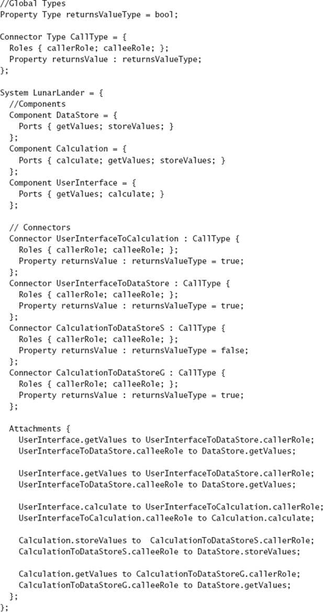
Figuras 6-24. Modelo estrutural Acme da aplicação do módulo lunar.
Outra coisa a notar sobre o modelo é o uso de propriedades. Neste modelo básico, apenas um tipo de propriedade é utilizado: cada conector de chamada de procedimento é anotado com uma propriedade que indica se a operação tem ou não valor de retorno. Isso pode ser útil para projetistas que desejam criar uma versão parcialmente assíncrona do módulo lunar: chamadas sem valores de retorno podem ser capazes de devolver o controle ao chamador sem esperar sua conclusão. O sistema de tipos da Acme é usado para declarar um conector e um tipo de propriedade, de modo que a regularidade pode ser imposta sobre conectores e propriedades semelhantes (por exemplo, todos os conectores no modelo Lunar Lander acima são do mesmo tipo: CallType). Os tipos no Acme funcionam de maneira semelhante aos estereótipos em um perfil UML: eles permitem que o usuário defina expectativas sobre elementos de instância que podem ser verificados posteriormente.
Comparado aos outros modelos do Lunar Lander acima, esse modelo básico da Acme não é muito inovador. No entanto, propriedades adicionais podem adicionar detalhes a esse modelo de várias maneiras, dependendo das necessidades do interveniente. Por exemplo, podemos falar mais sobre como o componente DataStore armazena seus dados, como mostrado na Figura 6-25. Essa descrição estendida do componente tem a intenção de indicar que o componente DataStore deve armazenar seus dados em uma tabela não replicada chamada "LanderTable" em um banco de dados relacional. No entanto, o fato de o modelo usar esses nomes e valores específicos de propriedades não é um padrão: ferramentas e partes interessadas devem ser informadas sobre quais propriedades esperar e como processar seus valores.
Conclusão. Apesar do fracasso relativo do intercâmbio arquitetônico, a noção de que a extensibilidade deve ser uma preocupação primária no desenvolvimento de LAD é boa é um reconhecimento explícito de que não pode haver uma LAD única para todos. Decorações baseadas em propriedades como mecanismo de extensibilidade oferecem certo grau de flexibilidade, mas a amplitude de preocupações arquitetônicas que os interessados querem captar exige a capacidade de definir novas construções de primeira classe.
A Linguagem de Marcação de Descrição de Arquitetura
(ADML)
A Architecture Description Markup Language (ADML) (Spencer 2000) é uma linguagem de descrição de arquitetura baseada em XML cuja sintaxe é derivada da Acme. Foi originalmente desenvolvido pelo MicroElectronics and Computer Technology Consortium (MCC) e é mantido como padrão pelo Open Group. Semanticamente, os dois são quase idênticos, sendo a principal adição do ADML o suporte a meta-propriedades. No ADML, meta-propriedades fornecem um mecanismo pelo qual os usuários podem especificar as propriedades (e tipos de propriedades) que devem estar presentes em determinados elementos.
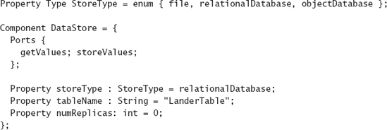
Figura 6-25. Definição estendida do componente Lunar Lander DataStore na Acme.
Usar a Extensible Markup Language (XML) como base para uma notação de modelagem de arquitetura confere vários benefícios. XML fornece uma estrutura padrão para expressar a sintaxe das notações. É muito adequado para descrever organizações hierárquicas de conceitos, e referências internas podem ser usadas para criar "ponteiros" de um elemento para outro. Um benefício prático significativo do uso do XML é a variedade de ferramentas comerciais e de código aberto disponíveis para analisar, manipular e visualizar documentos XML. O uso dessas ferramentas pode reduzir significativamente o tempo e esforço necessários para construir ferramentas centradas na arquitetura, como analisadores, editores, entre outros.
XML pode ser usado para criar linguagens com sintaxe extensível. No entanto, os primeiros padrões XML ofereciam suporte limitado para isso. A sintaxe do ADML é definida usando uma definição de tipo de documento XML (DTD), uma das primeiras metalinguagens XML, que utiliza regras de produção para definir a sintaxe. DTDs XML já foram usados para criar linguagens extensíveis, mas os mecanismos são um tanto complicados. Em vez disso, o ADML fornece sua extensibilidade pelo mesmo mecanismo do Acme propriedades do par nome-valor aplicadas a um conjunto central de elementos.
Lunar Lander em ADML. Como o ADML é tão semelhante ao Acme, não forneceremos uma descrição completa do ADML para a aplicação do módulo lunar. A descrição do componente Data Store no ADML pode ser a Figura 6-26. Embora o conteúdo semântico deste trecho ADML seja praticamente idêntico ao de sua contraparte Acme, o uso de XML como estrutura sintática padrão abre essa especificação para uma gama muito mais ampla de ferramentas, como analisadores e editores, que não estariam necessariamente disponíveis (ou tão onipresentes). Uma desvantagem óbvia é que, ao empregar XML, a já extensa descrição do Acme fica ainda mais densa. Isso reflete a atitude geral do XML em geral recursos computacionais e armazenamento de dados se tornaram baratos e abundantes, e ferramentas de edição se tornaram onipresentes. A conservação de bytes de dados não é mais uma força motriz no design de linguagem.
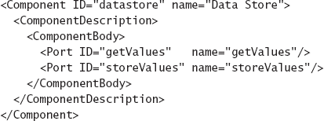
Figuras 6-26. Descrição de um componente do módulo lunar em ADML.
Conclusão. XML oferece muitos benefícios extrínsecos para modelagem de arquitetura, e quase todas as notações de descrição de arquitetura ainda em desenvolvimento pelo menos têm a opção de importar e exportar para XML. O ADML não aproveita os próprios mecanismos de extensibilidade do XML e, em vez disso, fornece extensibilidade simplesmente codificando as propriedades do par nome-valor da Acme em XML.
xADL: Uma Linguagem de
Descrição de Arquitetura Extensível Baseada em XML
xADL (Dashofy, van der Hoek e Taylor 2005) é uma tentativa de fornecer uma plataforma na qual recursos comuns de modelagem possam ser reutilizados de domínio para domínio e novos recursos possam ser criados e adicionados à linguagem como entidades de primeira classe (não apenas extensões para outras entidades, como no Acme e ADML). Assim como o ADML, xADL é uma linguagem baseada em XML. Ou seja, todo modelo xADL é um documento XML bem formado e válido. A principal diferença é que, ao contrário do ADML, o xADL aproveita totalmente os mecanismos de extensibilidade do XML para suas extensões de linguagem.
A sintaxe da linguagem xADL é definida em um conjunto de esquemas XML. Esquemas XML são semelhantes aos DTDs no sentido de que fornecem um formato para definir a sintaxe de uma linguagem. Enquanto DTDs definem a sintaxe do documento por meio de regras de produção, os esquemas XML definem a sintaxe por meio de um conjunto de tipos de dados, de forma semelhante à forma como as estruturas de dados são definidas em uma linguagem de programação orientada a objetos. Como as classes em uma linguagem de programação orientada a objetos, os tipos de dados de esquema XML podem ser estendidos por herança. Tipos de dados derivados podem ser declarados em esquemas separados. Por meio desse mecanismo, tipos de dados declarados em um esquema podem ser estendidos em outro esquema para adicionar novas funcionalidades de modelagem.
Sintaticamente, a linguagem xADL é a composição de todos os esquemas xADL. Cada esquema xADL adiciona um conjunto de características à linguagem. Os construtos em cada esquema podem ser novos construtos de topo ou podem ser extensões de construtos em outros esquemas. Dividir o conjunto de recursos dessa forma traz várias vantagens. Primeiro, permite adoção incremental os usuários podem usar tão poucos ou tantos recursos quanto fizer sentido para seu domínio. Segundo, permite uma extensão divergente os usuários podem estender a linguagem de maneiras inovadoras, até contraditórias, para adaptá-la para seus próprios propósitos. Terceiro, permite o reuso de características como conjuntos de recursos são definidos em módulos de esquema XML, esquemas podem ser compartilhados entre projetos que precisam de características comuns sem que cada grupo precise desenvolver suas próprias representações (provavelmente incompatíveis) para conceitos comuns.
De tempos em tempos, novos esquemas são adicionados ao xADL conforme são desenvolvidos, tanto por seus criadores quanto por colaboradores externos. Os esquemas xADL atuais são mostrados na caixa.
Esquemas xADL atuais
|
Esquema |
Características |
|
Estrutura e Tipos |
Define modelagem estrutural básica de arquiteturas prescritivas: componentes, conectores, interfaces, links, grupos gerais, bem como tipos para componentes, conectores e interfaces. |
|
Instâncias |
Modelagem estrutural básica de arquiteturas descritivas: componentes, conectores, interfaces, links, grupos gerais. |
|
Implementação Resumida |
Mapeamentos de tipos de elementos estruturais (tipos de componentes, tipos de conectores) para implementações. |
|
Implementação em Java |
Mapeamentos de tipos de elementos estruturais para implementações em Java. |
|
Opções |
Permite que elementos estruturais sejam declarados opcionais incluídos ou excluídos de uma arquitetura dependendo das condições especificadas. |
|
Variantes |
Permite que tipos de elementos estruturais sejam declarados variantes assumindo diferentes tipos de concreto dependendo das condições especificadas. |
|
Versões |
Define grafos de versões; permite que tipos de elementos estruturais sejam versionados por meio da associação com versões em grafos de versão. |
Como xADL pode ser estendido com construções e estruturas imprevistas de maneiras quase arbitrárias, ele induz desafios que não existem em linguagens com sintaxes e semânticas imutáveis (a maioria das outras ADLs que abordamos). Especificamente, analisadores sintácicos, editores, analisadores e outras ferramentas devem ser desenvolvidos para lidar com uma notação cuja sintaxe pode mudar de projeto para projeto.
O xADL aborda esses desafios com um conjunto associado de ferramentas que facilitam para os usuários implementarem suas próprias ferramentas (por exemplo, analisadores, editores) que podem lidar com a sintaxe extensível da linguagem. Entre eles estão os seguintes.
A Biblioteca de Vinculação de Dados xADL. Uma biblioteca de vinculação de dados é uma biblioteca de software que fornece uma API para análise analisada, leitura, gravação e serialização (regravação em disco ou outro armazenamento) documentos em uma linguagem específica. No caso do xADL, a biblioteca de vinculação de dados consiste em um conjunto de classes Java que correspondem aos tipos de dados xADL. Um programa pode consultar e manipular instâncias dessas classes para explorar e alterar um documento xADL. Embora documentos xADL também possam ser lidos, escritos e manipulados com qualquer ferramenta compatível com XML, a biblioteca de vinculação de dados oferece uma interface muito mais simples e é a base para a maioria das outras ferramentas xADL desenvolvidas até hoje.
Apigen. A biblioteca de vinculação de dados teria utilidade limitada se precisasse ser reescrita manualmente toda vez que esquemas fossem adicionados ao xADL. Apigen (Dashofy 2001) é o gerador de biblioteca de data binding do xADL: dado um conjunto de esquemas XML, ele pode gerar a biblioteca completa de data binding com suporte a esses esquemas. Se um usuário alterar ou adicionar um esquema, uma nova biblioteca de data binding pode ser gerada ao reexecutar o Apigen; Essa biblioteca conterá classes para consultar e manipular os tipos de dados novos ou alterados definidos no esquema do usuário.
xADL e xADLite
O formato nativo de armazenamento do xADL é em formato XML. Embora o XML seja projetado para ser legível tanto por humanos quanto por ferramentas de software, certos fatores podem dificultar a legibilidade humana dos documentos XML. Especificamente, o uso extensivo de namespaces XML e múltiplos esquemas pelo xADL adiciona uma quantidade significativa de dados de "manutenção" aos documentos xADL. Esses dados não são inúteis são usados por ferramentas como a data binding library e validadores XML mas dificultam a compreensão de um documento xADL para humanos que tentam lê-lo para conteúdo.
Por exemplo, um componente simples no formato XML do xADL pode se apresentar assim:
<types:component xsi:type="types:Component"
<types:id="myComp">
<types:description xsi:type="instance:Description">
MyComponent
</tipos:descrição>
<types:interface xsi:type="types: Interface"
tipos:id="iface1">
<types:description xsi:type="instance:Description">
Interface1
</tipos:descrição>
<types:direction xsi:type="instance:Direction">
entrada
</tipos: Direção>
</tipos:interface>
</tipos:componente>
Mesmo com o namespace e as informações de tipagem XML removidas, o resultado ainda é prolixo:
<componente id="meuComp">
<descrição>
MyComponent
</descrição>
< interface id="iface1">
<descrição>
Interface1
</descrição>
< direção>
entrada
</gestão>
<interface>
</componente>
De tempos em tempos neste livro, usaremos uma representação alternativa e mais legível dos documentos xADL chamada xADLite. xADLite é um formato mais sintaticamente conciso do que a representação nativa de XML, mas a transformação de xADLite para XML e vice-versa é sem perda nenhuma informação é perdida ao traduzir um documento de xADLite para xADL ou vice-versa. O mesmo componente em xADLite é assim:
component{
id="myComp";
description="MyComponent";
interface{
id="iface1";
description="interface1";
direção="inout";
}
}
Rubrica de Avaliação para xADL
|
Escopo e Propósito |
Modelagem da estrutura da arquitetura, linhas de produto e implementações, com suporte para extensibilidade |
|
Elementos Básicos |
Componentes, conectores, interfaces, links, opções, variantes, versões, além de quaisquer elementos básicos definidos em extensões. |
|
Estilo |
Aspectos estilísticos de uma arquitetura podem ser modelados por meio do uso de tipos e bibliotecas de tipos. |
|
Aspectos Estáticos e Dinâmicos |
A estrutura estática é modelada nativamente, propriedades dinâmicas podem ser capturadas por meio de extensões. O projeto MTAT (Hendrickson, Dashofy e Taylor 2005) estende o xADL para descrever o comportamento externo de componentes e conectores que se comunicam por meio de mensagens. |
|
Modelagem Dinâmica |
A biblioteca de vinculação de dados xADL permite manipular especificações xADL programaticamente. |
|
Aspectos Não Funcionais |
Extensões podem ser escritas para capturar aspectos não funcionais. |
|
Ambiguidade |
A linguagem xADL é propositalmente permissiva em como seus elementos podem ser usados, embora documentação indique seu uso pretendido. Existem ferramentas disponíveis para verificar automaticamente restrições em documentos xADL e permitir que os usuários definam suas próprias restrições. |
|
Exatidão |
Ferramentas são fornecidas para verificar a correção dos documentos xADL; Restrições adicionais podem ser inseridas nessas ferramentas para lidar com extensões. |
|
Precisão |
Extensões podem ser usadas para anotar tipos de elementos existentes com qualquer detalhe necessário ou criar construções totalmente novas de primeira classe. |
|
Vista |
Nativamente, são suportados pontos de vista estruturais (tanto tempo de execução quanto tempo de projeto), assim como vistas de linha de produto; extensões podem ser usadas para fornecer pontos de vista adicionais. |
|
Consistência de Visualização |
Ferramentas externas podem verificar a consistência das visualizações; São fornecidos frameworks para o desenvolvimento dessas ferramentas. |
Lunar Lander em xADL. Para especificações estruturais básicas, o xADL tem muito em comum com a Acme e o ADML. A estrutura básica da aplicação Lunar Lender, expressa na visualização textual xADLite do xADL, pode se parecer com a Figura 6-27. Assim como Darwin e outras ADLs, o xADL também possui uma visualização gráfica associada. Essa visualização é fornecida por um editor chamado Archipelago, que faz parte do conjunto de ferramentas xADL.
O modelo do módulo lunar renderizado pelo Archipelago é mostrado na Figura 6-28. Assim como no caso do Acme, a contribuição notacional chave do xADL está em sua extensibilidade. A extensibilidade do xADL vai além de adicionar propriedades aos construtos centrais. Na verdade, xADL não possui uma separação fundamental entre conceitos centrais e extensões. xADL permite a adição de elementos sintáticos completamente novos, além de extensões estruturadas para elementos existentes.
Reutilizando o exemplo da especificação aprimorada do componente fonte de dados acima para a Acme, vamos ver como mais detalhes sobre o componente de armazenamento de dados podem ser adicionados ao xADL (e à especificação xADL do Lunar Lander). A especificação do esquema XML para um componente xADL "simples" (como usado acima) é mostrada na Figura 6-29. Simplificando, essa especificação diz que um componente possui o seguinte.
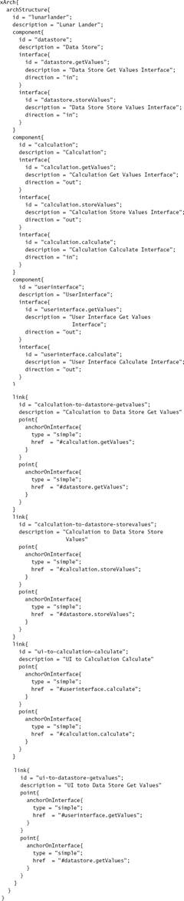
Figura 6-27. Arquitetura do módulo lunar descrita em xADLite.
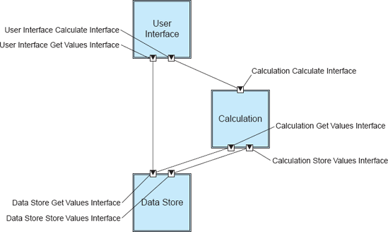
Figura 6-28. Lunar Lander em xADL, conforme visualizado pelo editor gráfico do Archipelago.
Ao adicionar outro esquema, podemos criar uma forma estendida de um componente que pode ser usada para capturar mais informações sobre onde o componente armazenará os dados. Uma extensão de exemplo é mostrada nas Figuras 6-30. Essa extensão para a linguagem xADL adiciona várias novas capacidades. Primeiro, ele define um novo tipo de dado abstrato chamado Banco de Dados. Isso é como declarar uma classe abstrata em uma linguagem de programação orientada a objetos: indica que vamos definir muitos subtipos diferentes de Banco de Dados que poderão ser substituídos sempre que um Banco de Dados for necessário. Em seguida, define dois subtipos concretos de Banco de Dados: Banco de Dados Relacional e Banco de Dados de Arquivos. Esses possuem características diferentes: um Banco de Dados Relacional possui um nome de tabela e várias réplicas, enquanto um Banco de Dados de Arquivos possui um nome de arquivo e um nome de host opcional no qual o arquivo reside.
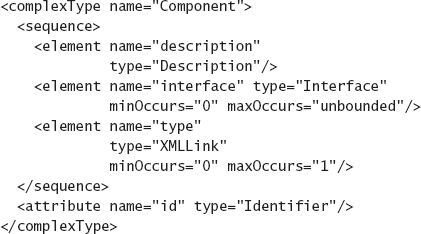
Figura 6-29. Descrição do esquema XML de um componente xADL.
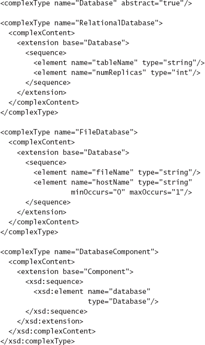
Figura 6-30. Extensão de esquema XML adicionando capacidades de componentes de banco de dados ao xADL.
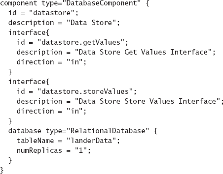
Figuras 6-31. Componente estendido do Armazenamento de Dados do Módulo de Pousagem Lunar em xADL.
Finalmente, ele define uma extensão para o tipo de dado simples xADL Component. Um Componente de Banco de Dados tem tudo o que um componente faz, além de um elemento Banco de Dados. Como tanto RelationalDatabase quanto FileDatabase são Bancos de Dados, qualquer um pode ser usado aqui (assim como outros tipos de banco de dados definidos pelo usuário em outros esquemas).
Agora podemos estender a descrição original xADL do componente Data Store na aplicação Lunar Lender, como mostrado na Figura 6-31. Usando esses mecanismos, os stakeholders podem definir suas necessidades de modelagem com muita precisão. Quando o novo esquema "DatabaseComponent" estiver pronto, o Apigen pode gerar uma nova biblioteca de vinculação de dados que suporta os novos construtos. Além disso, o compartilhamento de esquemas é possível (e incentivado)o esquema "DatabaseComponent" mencionado pode ser reutilizado de projeto para projeto, assim como quaisquer ferramentas que forneçam processamento avançado (edição, análise, etc.) sobre elementos desse esquema.
Conclusão. Embora as capacidades básicas de modelagem do xADL rivalizem com as de outras ADLs que abordamos, a principal contribuição do xADL está em sua extensibilidade. O xADL aproveita fortemente os mecanismos de extensibilidade do XML (e do XML Schema) para criar uma fábrica de ADL específica para domínio, onde ADLs específicas do domínio (e ferramentas de suporte) podem ser criadas a um custo muito menor do que desenvolvê-las do zero. O xADL é suportado por uma variedade de ferramentas de visualização, análise e utilidade no ambiente ArchStudio. Essas diversas ferramentas serão discutidas ao longo do restante do livro.
QUANDO OS SISTEMAS SE TORNAM COMPLEXOS DEMAIS PARA MODELAR
Neste capítulo, mostramos como várias notações podem expressar uma aplicação simples como o módulo lunar Land (módulo lunar). A arquitetura do Lunar Lander possui certas propriedades que simplificam a modelagem: possui um número finito de componentes conhecidos que rodam em um único hospedeiro. Mesmo grandes sistemas distribuídos podem ser modelados de maneiras semelhantes, embora o esforço necessário para modelar esses sistemas aumente com seu tamanho. No entanto, certas aplicações (especialmente aplicações em escala da Internet) não podem ser modeladas usando essas mesmas técnicas. Por exemplo, seria praticamente impossível modelar a Web, ou Gnutella (Kan, 2001) usando algumas das técnicas de modelagem acima. São aplicações gigantescas e diversas. A configuração dos componentes e conectores na Internet está em constante mudança. Na verdade, eles são tão grandes e voláteis que é impossível saber a configuração dos componentes e conectores em qualquer momento. Assim, não é possível gerar um modelo desses sistemas no sentido tradicional de componentes-conectores-e-configurações. Há componentes demais, e a estrutura da aplicação está mudando rápido demais.
Modelar aplicações com esse tipo de complexidade é possível, usando algumas das técnicas que já discutimos. Todos eles envolvem abstrair aspectos da complexidade para chegar a um ponto em que a modelagem seja viável, mas ainda útil. Essa é a essência da modelagem. As estratégias a considerar neste caso incluem as seguintes.
ASSUNTO FINAL
Neste capítulo, apresentamos a modelagem de arquitetura e identificamos muitos dos problemas que ocorrem no processo de modelagem. Também introduzimos e fornecemos exemplos de muitas notações de descrição de arquitetura.
É impossível fornecer uma cobertura aprofundada da variedade de notações de descrição de arquitetura neste texto de fato, livros, teses e artigos acadêmicos abundam discutindo cada notação em grande detalhe. Em vez disso, tentamos destacar os aspectos distintivos de cada notação. Incentivamos os leitores interessados a aproveitarem a Web e os recursos indicados ao final do capítulo para investigar essas AVDs de forma mais aprofundada a partir de fontes primárias.
O objetivo deste capítulo é dar aos leitores uma noção da amplitude da atividade de modelagem, bem como das notações, ferramentas e técnicas disponíveis para apoiá-la. O que deveria ser óbvio é que nenhuma notação única mesmo uma notação extensível é suficiente para capturar todos os aspectos da arquitetura que serão importantes para um projeto complexo. As partes interessadas devem fazer escolhas informadas de técnicas, baseadas nas necessidades do projeto em questão. A tabela a seguir recapitula as abordagens de modelagem que discutimos neste capítulo e tenta agrupá-las em categorias que compartilham características. Note que algumas abordagens se enquadram em mais de uma categoria. Um exemplo é Darwin. Ele é agrupado com as ADLs sintaticamente rigorosas, como UML e OMT, devido à sua utilidade como uma forma direta de capturar e comunicar rigorosamente a estrutura arquitetônica. Também está na categoria formal por causa de suas bases formais no cálculo pi, embora essas bases formais raramente sejam exploradas.
Idealmente, stakeholders e arquitetos poderiam simplesmente selecionar uma notação madura que cubra suas necessidades de modelagem e análise. No entanto, a realidade é que atualmente não há notações maduras suficientes disponíveis para tornar isso possível. Mesmo que alguém estivesse disposto a usar várias notações simultaneamente (e lidar com os custos de gerenciar a consistência entre elas), provavelmente ainda haverá lacunas entre o que pode ser modelado e o que as partes interessadas precisam. Isso significa que os arquitetos não terão apenas que investir em modelagem, mas também no desenvolvimento das tecnologias que utilizam para modelar. A modelagem seria substancialmente mais eficaz se uma parte do orçamento total de projeto de um sistema fosse dedicada a aprimorar as tecnologias fundamentais usadas para realizar o projeto. No entanto, selecionar e usar pelo menos uma notação de modelagem de arquitetura de preferência uma notação extensível é muito melhor do que não fazer modelagem nenhuma, e significativamente melhor do que usar uma notação semanticamente empobrecida como PowerPoint ou UML.
|
Categoria |
Características da Categoria |
Exemplos |
|
Informal/Livre |
Alta expressividade, ambiguidade, falta de rigor, ausência de semântica formal |
Linguagem natural, diagramas gráficos informais. |
|
Rigoroso sintaticamente |
Sintaxe rigorosa, mas pouca semântica, útil principalmente para comunicação. |
UML, OMT, Darwin. |
|
Formal |
Sintaxe rigorosa e semântica formal subjacente, análises automatizadas possíveis, curvas de aprendizado mais íngremes. |
Darwin, Rapide, Wright. |
|
Específico de domínio ou estilo |
A otimização para um domínio ou estilo específico tem um forte mapeamento para conceitos específicos de domínio ou estilo. |
Tramas, Coala, AADL. |
|
Extensível |
Suporte para um conjunto central de construções e a capacidade dos usuários definirem os seus próprios. |
ACME, ADML, xADL, UML. |
Selecionar notações para uso em um projeto é uma atividade sutil e complexa. Este capítulo focou em quais aspectos da arquitetura são modelados por diferentes notações, e como essas notações modelam esses aspectos. Esses são apenas dois fatores na escolha de uma notação. Outras perguntas importantes também precisam ser respondidas: Que tipos de visualizações estão disponíveis com essa notação? Que tipos de análises podem ser realizadas em modelos na notação? Como os modelos dessa notação podem ser ligados a outras fases do ciclo de vida? Todos esses aspectos do design serão abordados em capítulos subsequentes. O próximo capítulo foca especificamente em visualizações, onde separamos o conceito abstrato de notação (uma forma de organizar a informação em decisões de design) das diferentes maneiras pelas quais a informação pode ser interagida e representada.
O Caso de Negócios
Decidir o que modelar e quais abordagens usar é muito uma escolha guiada por custos e benefícios. Modelar leva tempo e esforço, assim como manter modelos que já foram criados. Quanto mais complexos, precisos e inequívocos os modelos, mais esforço cognitivo, tempo e dinheiro serão investidos na criação deles.
Diferentes tipos de modelos produzem diferentes tipos de benefícios. Esses benefícios geralmente vêm na forma de mitigação de custos: os próprios modelos não geram receita (exceto talvez no caso de que façam parte de documentação ou treinamento que pode ser vendido aos clientes). Benefícios típicos da modelagem incluem:
Como parte do início do projeto e do planejamento de negócios, é uma boa ideia desenvolver uma estratégia de modelagem, que seja simplesmente um acordo entre as partes interessadas sobre que tipos de modelos serão construídos, quais notações ou ferramentas serão usadas, quais critérios de consistência serão aplicados, como esses modelos serão usados na atividade geral de desenvolvimento, e assim por diante. Também é recomendável desenvolver e documentar argumentos de custo/benefício para cada modelo ou tipo de modelo, capturando a justificativa para a criação e uso de cada modelo. Além disso, assim como o escalonamento de projetos pode ser usado para estimar o tempo e o custo de implementar vários aspectos do sistema, o escalonamento também pode ser aplicado ao desenvolvimento e manutenção de modelos.
PERGUNTAS DE REVISÃO
EXERCÍCIOS
LEITURA ADICIONAL
O capítulo começa com uma visão sobre modelagem de The Art of Systems Architecting, de Maier e Rechtin (Maier e Rechtin 2000). Embora não seja apenas sobre modelagem, este livro aborda a arquitetura sob a perspectiva de um engenheiro de sistemas, que é, em geral, mais ampla e menos concreta do que a perspectiva de um engenheiro de software. Como em grande parte do conteúdo deste livro, os conselhos de Maier e Rechtin são frequentemente igualmente aplicáveis tanto ao desenvolvimento de sistemas quanto de software.
A maior parte deste capítulo apresenta e apresenta uma ampla variedade de notações de modelagem. Embora tenhamos nos esforçado para destilar cada notação até sua essência e comentar os aspectos das notações que consideramos distintivos, as poucas páginas dedicadas a cada notação frequentemente não conseguem capturar adequadamente seu alcance e sutileza. Leitores interessados devem investigar documentos de origem e especificações relacionadas a essas anotações para tratamentos mais aprofundados. Ferramentas para trabalhar com notações gráficas não restritas, como PowerPoint (Microsoft Corporation 2007), Visio (Microsoft Corporation 2007) e OmniGraffle (The Omni Group 2007) estão amplamente disponíveis. Muitos livros foram escritos sobre UML, mas a referência canônica vem dos próprios desenvolvedores (Booch, Rumbaugh e Jacobson 2005). Medvidović e Taylor pesquisaram as primeiras ADLs (Medvidović e Taylor 2000). Entre eles estavam Darwin (Magee et al., 1995), Wright (Allen e Garlan, 1997) [tratado ainda mais extensivamente na tese de doutorado de Allen (Allen 1997)], e Rapide (Luckham et al. 1995), que inspirou o trabalho posterior de Luckham et al. em processamento complexo de eventos (Luckham 2002). A adoção pela UML de modelar a maioria das visões arquitetônicas genéricas resultou em ADLs de segunda geração como Koala (van Ommering et al. 2000) e AADL (Feiler, Lewis e Vestal 2003) [baseadas em uma ADL anterior, MetaH (Binns et al. 1996)], que abordaram preocupações mais específicas de domínio. Uma direção empolgante no desenvolvimento da ADL continua sendo a criação e crescimento de ADLs extensíveis, desde exemplos iniciais como Acme (Garlan, Monroe e Wile 1997) e ADML (Spencer 2000) até exemplos posteriores e mais flexíveis, como xADL 2.0 (Dashofy, van der Hoek e Taylor 2005).
Clements et al. (2002) dedicaram um livro inteiro à questão da documentação de arquiteturas de software, que foca principalmente em modelagem. O livro deles adota uma abordagem centrada em pontos de vista, analisando uma grande variedade de pontos de vista e fornecendo orientações sobre o que deve ser capturado em cada um. O livro deles também faz um panorama de notações e padrões relevantes.
[8] Nos primeiros dias da computação, alguns projetistas de linguagens de programação acreditavam que as linguagens poderiam ser melhoradas tornando-as mais parecidas com linguagem natural, com rigor sintático adicional. Assim, linguagens como COBOL incluíam afirmações como: "MULTIPLICAR X POR 5 DANDO Z", em vez do mais conciso "z = × * 5." Essas técnicas caíram em desuso, pois só serviam para tornar os programas mais prolixos.
[9] Este diagrama usa os ícones de bola e soquete do UML 2 para representar as interfaces fornecidas e necessárias, respectivamente. Em versões anteriores do UML 2, o soquete e a bola podiam ser diretamente conectados graficamente (sem uma seta de dependência intermediária) para indicar a conexão, mas esse estilo diagramático foi obsoleto pelo comitê UML, exceto em diagramas de estrutura composta.